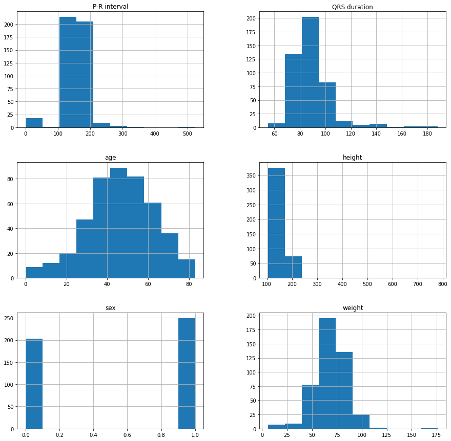
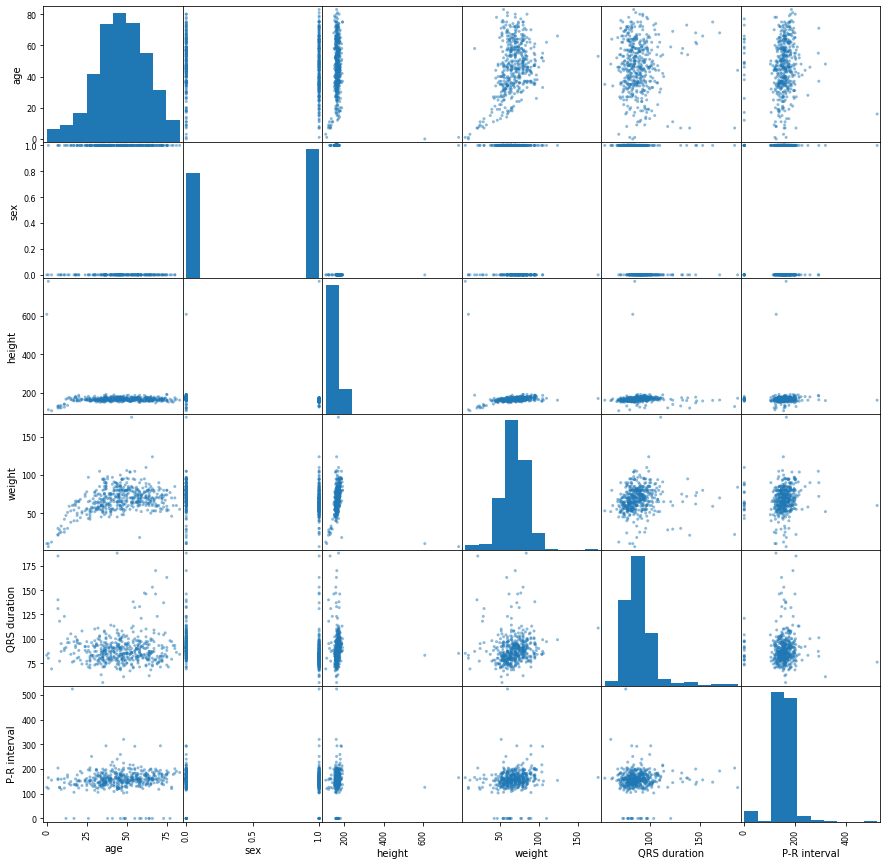

================ by Jawad Haider
- Part 1: Using wget
- Part 2: Using tf.keras
- Part 3: Upload the file yourself
- Part 4: Access files from Google Drive
Part 1: Using wget¶
# download the data from a URL
# source: https://archive.ics.uci.edu/ml/datasets/Arrhythmia
# alternate URL: https://lazyprogrammer.me/course_files/arrhythmia.data
#!wget --no-check-certificate https://archive.ics.uci.edu/ml/machine-learning-databases/arrhythmia/arrhythmia.data
!wget https://lazyprogrammer.me/course_files/arrhythmia.data
--2020-04-26 07:33:37-- https://lazyprogrammer.me/course_files/arrhythmia.data
Resolving lazyprogrammer.me (lazyprogrammer.me)... 104.31.80.48, 104.31.81.48, 2606:4700:3035::681f:5130, ...
Connecting to lazyprogrammer.me (lazyprogrammer.me)|104.31.80.48|:443... connected.
HTTP request sent, awaiting response... 200 OK
Length: 402355 (393K)
Saving to: ‘arrhythmia.data’
arrhythmia.data 100%[===================>] 392.92K 1.09MB/s in 0.4s
2020-04-26 07:33:38 (1.09 MB/s) - ‘arrhythmia.data’ saved [402355/402355]
arrhythmia.data sample_data
75,0,190,80,91,193,371,174,121,-16,13,64,-2,?,63,0,52,44,0,0,32,0,0,0,0,0,0,0,44,20,36,0,28,0,0,0,0,0,0,52,40,0,0,0,60,0,0,0,0,0,0,52,0,0,0,0,0,0,0,0,0,0,0,0,56,36,0,0,32,0,0,0,0,0,0,48,32,0,0,0,56,0,0,0,0,0,0,80,0,0,0,0,0,0,0,0,0,0,0,0,40,52,0,0,28,0,0,0,0,0,0,0,48,48,0,0,32,0,0,0,0,0,0,0,52,52,0,0,36,0,0,0,0,0,0,0,52,48,0,0,32,0,0,0,0,0,0,0,56,44,0,0,32,0,0,0,0,0,0,-0.2,0.0,6.1,-1.0,0.0,0.0,0.6,2.1,13.6,30.8,0.0,0.0,1.7,-1.0,0.6,0.0,1.3,1.5,3.7,14.5,0.1,-5.2,1.4,0.0,0.0,0.0,0.8,-0.6,-10.7,-15.6,0.4,-3.9,0.0,0.0,0.0,0.0,-0.8,-1.7,-10.1,-22.0,0.0,0.0,5.7,-1.0,0.0,0.0,-0.1,1.2,14.1,22.5,0.0,-2.5,0.8,0.0,0.0,0.0,1.0,0.4,-4.8,-2.7,0.1,-6.0,0.0,0.0,0.0,0.0,-0.8,-0.6,-24.0,-29.7,0.0,0.0,2.0,-6.4,0.0,0.0,0.2,2.9,-12.6,15.2,-0.1,0.0,8.4,-10.0,0.0,0.0,0.6,5.9,-3.9,52.7,-0.3,0.0,15.2,-8.4,0.0,0.0,0.9,5.1,17.7,70.7,-0.4,0.0,13.5,-4.0,0.0,0.0,0.9,3.9,25.5,62.9,-0.3,0.0,9.0,-0.9,0.0,0.0,0.9,2.9,23.3,49.4,8
56,1,165,64,81,174,401,149,39,25,37,-17,31,?,53,0,48,0,0,0,24,0,0,0,0,0,0,0,64,0,0,0,24,0,0,0,0,0,0,32,24,0,0,0,40,0,0,0,0,0,0,48,0,0,0,0,0,0,0,0,0,0,0,0,44,20,0,0,24,0,0,0,0,0,0,0,60,0,0,0,20,0,0,0,0,0,0,0,24,52,0,0,16,0,0,0,0,0,0,0,32,52,0,0,20,0,0,0,0,0,0,0,44,48,0,0,32,0,0,0,0,0,0,0,48,44,0,0,32,0,0,0,0,0,0,0,48,40,0,0,28,0,0,0,0,0,0,0,48,0,0,0,28,0,0,0,0,0,0,-0.6,0.0,7.2,0.0,0.0,0.0,0.4,1.5,17.2,26.5,0.0,0.0,5.5,0.0,0.0,0.0,0.1,1.7,17.6,29.5,0.3,-1.6,0.9,0.0,0.0,0.0,-0.3,0.4,-1.5,1.3,0.1,-6.4,0.0,0.0,0.0,0.0,-0.3,-1.6,-15.3,-25.5,-0.3,0.0,4.2,-0.9,0.0,0.0,0.4,0.7,8.3,12.3,0.2,0.0,2.2,0.0,0.0,0.0,-0.2,0.8,6.6,11.7,0.4,0.0,1.0,-8.8,0.0,0.0,0.5,-0.6,-21.6,-26.8,0.4,0.0,2.6,-7.9,0.0,0.0,0.8,2.0,-16.4,1.2,0.0,0.0,5.8,-7.7,0.0,0.0,0.9,3.8,-5.7,27.7,-0.2,0.0,9.5,-5.0,0.0,0.0,0.5,2.6,11.8,34.6,-0.4,0.0,11.0,-2.4,0.0,0.0,0.4,2.6,21.6,43.4,-0.5,0.0,8.5,0.0,0.0,0.0,0.2,2.1,20.4,38.8,6
54,0,172,95,138,163,386,185,102,96,34,70,66,23,75,0,40,80,0,0,24,0,0,0,0,0,0,20,56,52,0,0,40,0,0,0,0,0,0,28,116,0,0,0,52,0,0,0,0,0,0,52,64,0,0,0,88,0,0,0,0,0,0,0,36,92,0,0,24,0,0,0,0,0,0,0,128,0,0,0,24,0,1,0,0,0,0,0,24,36,76,0,100,0,0,0,0,0,0,0,40,28,60,0,96,0,0,0,0,0,0,0,48,20,56,24,32,0,0,0,0,0,0,0,44,88,0,0,28,0,0,0,0,0,0,0,44,76,0,0,28,0,0,0,0,0,0,0,44,72,0,0,24,0,0,0,0,0,0,1.0,0.0,4.5,-2.8,0.0,0.0,0.3,2.5,-2.2,19.8,0.8,-0.4,6.4,-1.3,0.0,0.0,0.7,2.7,14.2,37.9,-0.2,-0.6,4.4,0.0,0.0,0.0,0.5,0.2,24.7,26.2,-1.0,-5.3,1.8,0.0,0.0,0.0,-0.5,-2.5,-8.0,-28.5,0.5,0.0,1.7,-2.7,0.0,0.0,-0.2,1.0,-9.4,-1.2,0.4,0.0,4.9,0.0,0.0,0.0,0.6,1.4,31.3,42.7,-0.8,0.0,0.7,-3.8,6.5,0.0,0.3,-3.3,18.7,-13.6,-0.9,0.0,2.2,-4.1,7.4,0.0,0.5,-2.4,20.9,-2.6,0.0,0.0,5.8,-4.1,4.0,-0.5,0.4,0.3,20.4,23.3,0.7,0.0,10.0,-5.7,0.0,0.0,0.5,2.2,-3.0,20.7,1.3,0.0,11.1,-3.4,0.0,0.0,0.4,3.4,11.5,48.2,0.9,0.0,9.5,-2.4,0.0,0.0,0.3,3.4,12.3,49.0,10
55,0,175,94,100,202,380,179,143,28,11,-5,20,?,71,0,72,20,0,0,48,0,0,0,0,0,0,0,64,36,0,0,36,0,0,0,0,0,0,20,52,48,0,0,56,0,0,0,0,0,0,64,32,0,0,0,72,0,0,0,0,0,0,0,60,12,0,0,44,0,0,0,0,0,0,0,60,44,0,0,32,0,0,0,0,0,0,56,0,0,0,0,0,0,0,0,0,0,0,0,40,44,0,0,20,0,0,0,0,0,0,0,52,40,0,0,32,0,0,0,0,0,0,0,56,48,0,0,36,0,0,0,0,0,0,0,60,48,0,0,36,0,0,0,0,0,0,0,64,40,0,0,40,0,0,0,0,0,0,0.9,0.0,7.8,-0.7,0.0,0.0,1.1,1.9,27.3,45.1,0.1,0.0,9.1,-2.6,0.0,0.0,0.4,1.5,24.5,36.8,-0.4,-0.4,1.6,-2.2,0.0,0.0,-1.0,-0.9,-1.5,-9.2,-0.4,-8.2,1.8,0.0,0.0,0.0,-0.7,-1.7,-23.4,-35.6,0.9,0.0,3.2,-0.4,0.0,0.0,0.7,1.2,9.4,18.0,-0.1,0.0,5.1,-2.5,0.0,0.0,0.3,0.6,9.8,12.6,1.6,-6.5,0.0,0.0,0.0,0.0,-0.4,-0.4,-18.2,-22.4,2.1,0.0,1.2,-6.9,0.0,0.0,-0.5,2.9,-12.7,18.0,0.7,0.0,9.0,-7.9,0.0,0.0,0.1,4.1,7.6,51.0,0.4,0.0,15.0,-5.5,0.0,0.0,0.1,3.3,28.8,63.1,0.1,0.0,15.2,-3.7,0.0,0.0,0.6,3.0,36.8,68.0,0.1,0.0,12.2,-2.2,0.0,0.0,0.4,2.6,34.6,61.6,1
75,0,190,80,88,181,360,177,103,-16,13,61,3,?,?,0,48,40,0,0,28,0,0,0,0,0,0,0,40,24,0,0,24,0,0,0,0,0,0,52,36,0,0,0,60,0,0,0,0,0,0,48,28,0,0,0,56,0,0,0,0,0,0,0,48,36,0,0,28,0,0,0,0,0,0,44,0,0,0,0,0,0,0,0,0,0,0,88,0,0,0,0,0,0,0,0,0,0,0,0,40,52,0,0,28,0,0,0,0,0,0,0,48,48,0,0,32,0,0,0,0,0,0,0,48,52,0,0,32,0,0,0,0,0,0,0,52,44,0,0,28,0,0,0,0,0,0,0,52,48,0,0,32,0,0,0,0,0,0,0.0,0.0,5.2,-1.4,0.0,0.0,0.9,2.3,9.6,31.6,0.1,0.0,1.6,-0.5,0.0,0.0,1.9,1.7,2.6,18.9,0.2,-3.8,1.2,0.0,0.0,0.0,1.0,-0.6,-7.7,-13.4,-0.1,-3.4,0.8,0.0,0.0,0.0,-1.4,-1.5,-7.0,-17.8,-0.1,0.0,4.4,-1.3,0.0,0.0,-0.1,1.1,8.2,16.5,0.6,-1.6,0.0,0.0,0.0,0.0,1.4,0.3,-3.5,-1.9,0.0,-5.7,0.0,0.0,0.0,0.0,-0.4,-0.5,-25.0,-30.0,-0.2,0.0,1.6,-6.0,0.0,0.0,-0.7,2.1,-12.4,8.6,-0.5,0.0,8.5,-10.2,0.0,0.0,-1.0,4.7,-4.0,43.0,-0.2,0.0,15.2,-7.8,0.0,0.0,-0.1,4.9,16.2,63.2,-0.2,0.0,9.1,-0.9,0.0,0.0,-0.2,2.9,21.7,48.9,-0.4,0.0,13.1,-3.6,0.0,0.0,-0.1,3.9,25.4,62.8,7
13,0,169,51,100,167,321,174,91,107,66,52,88,?,84,0,36,48,0,0,20,0,0,0,0,0,0,20,44,36,0,0,44,0,0,0,0,0,0,24,64,0,0,0,48,0,0,0,0,0,0,44,36,0,0,0,52,0,0,0,0,0,0,0,28,64,0,0,16,0,0,0,0,0,0,24,44,40,0,0,44,0,0,0,0,0,0,0,36,60,0,0,24,0,0,0,0,0,0,20,32,60,0,0,40,0,0,0,0,0,0,24,32,60,0,0,44,0,0,0,0,0,0,0,52,40,0,0,36,0,0,0,0,0,0,0,44,40,0,0,32,0,0,0,0,0,0,20,36,56,0,0,40,0,0,0,0,0,0,0.5,0.0,2.7,-6.4,0.0,0.0,0.9,1.7,-10.5,7.1,0.1,-1.2,19.1,-2.3,0.0,0.0,1.4,4.3,36.7,84.8,-0.4,-2.3,21.7,0.0,0.0,0.0,0.7,2.6,66.7,95.8,-0.2,-9.0,3.2,0.0,0.0,0.0,-1.1,-2.9,-14.1,-39.0,0.5,0.0,1.8,-12.9,0.0,0.0,0.4,-0.4,-38.7,-42.1,-0.1,-1.6,19.9,-0.7,0.0,0.0,1.0,3.3,40.4,65.4,0.4,0.0,6.7,-24.4,0.0,0.0,-1.2,0.4,-61.2,-59.9,0.9,-0.5,11.9,-43.3,0.0,0.0,0.8,3.4,-111.4,-95.1,2.0,-0.8,19.8,-48.4,0.0,0.0,1.6,8.7,-114.5,-72.8,2.0,0.0,31.0,-25.7,0.0,0.0,0.8,5.9,29.2,85.8,0.6,0.0,19.5,-11.4,0.0,0.0,0.8,3.3,20.1,49.1,0.0,-0.6,12.2,-2.8,0.0,0.0,0.9,2.2,13.5,31.1,14
40,1,160,52,77,129,377,133,77,77,49,75,65,?,70,0,44,0,0,0,24,0,0,0,0,0,0,0,40,32,0,0,24,0,0,0,0,0,0,0,44,28,0,0,24,0,0,0,0,0,0,44,16,0,0,0,48,0,0,0,0,0,0,36,0,0,0,0,0,0,0,0,0,0,0,0,44,16,0,0,24,0,0,0,0,0,0,0,20,56,0,0,12,0,0,0,0,0,0,0,24,56,0,0,16,0,0,0,0,0,0,0,36,48,0,0,24,0,0,0,0,0,0,0,40,44,0,0,28,0,0,0,0,0,0,0,40,44,0,0,24,0,0,0,0,0,0,0,44,0,0,0,24,0,0,0,0,0,0,-0.5,0.0,1.8,0.0,0.0,0.0,0.2,1.0,3.9,10.5,-0.1,0.0,7.6,-1.1,0.0,0.0,0.5,1.4,13.5,22.7,0.0,0.0,5.9,-0.5,0.0,0.0,0.3,0.6,12.2,15.0,0.1,-4.6,0.6,0.0,0.0,0.0,-0.4,-0.9,-9.7,-14.7,0.2,-2.1,0.0,0.0,0.0,0.0,-0.3,0.4,-3.7,-1.4,-0.2,0.0,6.8,-0.9,0.0,0.0,0.7,0.7,14.2,17.1,1.3,0.0,1.3,-11.5,0.0,0.0,-0.3,1.7,-30.9,-13.9,1.7,0.0,2.3,-17.5,0.0,0.0,-0.6,4.5,-46.3,-1.3,1.1,0.0,3.7,-11.0,0.0,0.0,-0.5,4.1,-19.8,21.2,0.1,0.0,7.7,-6.4,0.0,0.0,0.4,1.9,1.4,15.4,0.0,0.0,7.4,-2.5,0.0,0.0,0.4,1.3,9.3,18.9,-0.4,0.0,6.5,0.0,0.0,0.0,0.4,1.0,14.3,20.5,1
49,1,162,54,78,0,376,157,70,67,7,8,51,?,67,0,44,36,0,0,24,0,0,0,0,0,0,0,52,32,0,0,28,0,0,0,0,0,0,0,56,28,0,0,24,0,0,0,0,0,0,48,32,0,0,0,56,0,0,0,0,0,0,52,0,0,0,0,0,0,0,0,0,0,0,0,52,28,0,0,28,0,0,0,0,0,0,0,20,44,0,0,8,0,0,0,0,0,0,0,24,48,0,0,16,0,0,0,0,0,0,0,36,44,0,0,24,0,0,0,0,0,0,0,44,48,0,0,28,0,0,0,0,0,0,0,48,44,0,0,28,0,0,0,0,0,0,0,48,40,0,0,24,0,0,0,0,0,0,-0.3,0.0,4.1,-1.1,0.0,0.0,0.8,1.0,7.1,13.7,-0.3,0.0,8.4,-1.5,0.0,0.0,0.6,0.7,19.4,22.9,0.0,0.0,4.4,-0.8,0.0,0.0,-0.3,-0.6,11.2,6.9,0.1,-6.3,1.3,0.0,0.0,0.0,-0.6,-0.8,-13.1,-17.9,0.1,-0.8,0.0,0.0,0.0,0.0,0.6,0.7,-2.0,2.9,-0.2,0.0,6.3,-1.2,0.0,0.0,0.2,0.3,14.7,16.8,0.7,0.0,0.5,-7.3,0.0,0.0,0.2,-0.1,-15.5,-16.4,0.9,0.0,0.7,-8.9,0.0,0.0,0.6,2.5,-20.5,4.0,0.8,0.0,2.1,-9.0,0.0,0.0,0.6,3.8,-16.1,21.1,0.1,0.0,6.6,-4.1,0.0,0.0,0.3,1.4,4.7,14.2,-0.2,0.0,8.5,-2.7,0.0,0.0,0.1,0.8,14.5,20.9,-0.3,0.0,8.2,-1.9,0.0,0.0,0.1,0.5,15.8,19.8,1
44,0,168,56,84,118,354,160,63,61,69,78,66,84,64,0,40,0,0,0,20,0,0,0,0,0,0,0,44,12,0,0,28,0,0,0,0,0,0,0,36,8,0,0,20,0,0,0,0,0,0,40,12,0,0,0,44,0,0,0,0,0,0,0,0,0,0,0,0,0,0,0,0,0,0,0,36,12,0,0,20,0,0,0,0,0,0,0,20,56,0,0,12,0,0,0,0,0,0,0,24,48,0,0,12,0,0,0,0,0,0,0,28,44,0,0,16,0,0,0,0,0,0,0,44,32,0,0,32,0,0,0,0,0,0,0,44,28,0,0,28,0,0,0,0,0,0,0,40,24,0,0,24,0,0,0,0,0,0,0.1,0.0,2.3,0.0,0.0,0.0,0.4,1.0,4.6,11.6,1.2,0.0,5.4,-0.7,0.0,0.0,1.8,2.8,11.4,31.0,1.1,0.0,3.0,-0.4,0.0,0.0,1.4,1.8,5.3,17.9,-0.7,-3.9,0.5,0.0,0.0,0.0,-1.1,-1.9,-7.5,-20.4,-0.5,0.0,0.0,0.0,0.0,0.0,-0.6,-0.5,0.0,-3.4,1.1,0.0,4.2,-0.5,0.0,0.0,1.6,2.3,7.2,22.8,0.5,0.0,0.9,-5.5,0.0,0.0,-0.7,1.0,-14.5,-5.3,0.7,0.0,1.2,-6.4,0.0,0.0,-0.5,2.6,-13.9,10.0,1.5,0.0,2.4,-10.3,0.0,0.0,0.3,6.8,-19.3,43.2,0.8,0.0,7.9,-7.3,0.0,0.0,0.9,6.5,5.7,62.9,0.1,0.0,9.3,-3.8,0.0,0.0,0.8,3.8,15.1,48.5,0.1,0.0,7.0,-1.3,0.0,0.0,0.6,2.1,12.5,30.9,1
50,1,167,67,89,130,383,156,73,85,34,70,71,?,63,0,44,40,0,0,28,0,0,0,0,0,0,0,56,24,0,0,32,0,0,0,0,0,0,0,72,0,0,0,28,0,0,0,0,0,0,56,28,0,0,0,60,0,0,0,0,0,0,0,28,56,0,0,16,0,0,0,0,0,0,0,60,0,0,0,32,0,0,0,0,0,0,0,24,36,32,0,68,0,0,0,0,0,0,0,36,44,0,0,20,0,0,0,0,0,0,0,40,48,0,0,24,0,0,0,0,0,0,0,56,40,0,0,40,0,0,0,0,0,0,0,52,36,0,0,32,0,0,0,0,0,0,20,44,36,0,0,44,0,0,0,0,0,0,-0.1,0.0,3.5,-2.0,0.0,0.0,0.4,1.3,3.7,13.5,0.0,0.0,9.9,-0.8,0.0,0.0,1.2,1.2,26.8,35.2,0.0,0.0,8.3,0.0,0.0,0.0,0.8,0.3,29.8,32.0,0.1,-6.1,1.1,0.0,0.0,0.0,-0.6,-1.2,-15.5,-24.1,0.0,0.0,0.6,-4.1,0.0,0.0,-0.1,0.8,-10.6,-4.9,-0.2,0.0,8.9,0.0,0.0,0.0,0.8,0.7,26.7,30.2,0.1,0.0,1.3,-5.4,1.9,0.0,0.2,0.8,-5.2,2.1,0.8,0.0,4.4,-8.5,0.0,0.0,0.8,3.9,-10.8,25.0,0.4,0.0,4.3,-7.3,0.0,0.0,1.1,4.0,-8.9,27.9,-0.5,0.0,7.0,-3.2,0.0,0.0,1.1,1.3,13.2,22.3,-0.5,0.0,10.9,-2.5,0.0,0.0,1.0,1.0,23.8,29.6,-0.5,-0.6,10.8,-1.7,0.0,0.0,0.8,0.9,20.1,25.1,10
# since the data has many columns, take just the first few and name them (as per the documentation)
data = df[[0,1,2,3,4,5]]
data.columns = ['age', 'sex', 'height', 'weight', 'QRS duration', 'P-R interval']
import matplotlib.pyplot as plt
plt.rcParams['figure.figsize'] = [15, 15] # make the plot bigger so the subplots don't overlap
data.hist(); # use a semicolon to supress return value


Part 2: Using tf.keras¶
# use keras get_file to download the auto MPG dataset
# source: https://archive.ics.uci.edu/ml/datasets/Auto+MPG
#url = 'https://archive.ics.uci.edu/ml/machine-learning-databases/auto-mpg/auto-mpg.data'
### alternate URL
url = 'https://raw.githubusercontent.com/lazyprogrammer/machine_learning_examples/master/tf2.0/auto-mpg.data'
2.2.0-rc2
Downloading data from https://raw.githubusercontent.com/lazyprogrammer/machine_learning_examples/master/tf2.0/auto-mpg.data
32768/30286 [================================] - 0s 1us/step
'/root/.keras/datasets/auto-mpg.data'
18.0 8 307.0 130.0 3504. 12.0 70 1 "chevrolet chevelle malibu"
15.0 8 350.0 165.0 3693. 11.5 70 1 "buick skylark 320"
18.0 8 318.0 150.0 3436. 11.0 70 1 "plymouth satellite"
16.0 8 304.0 150.0 3433. 12.0 70 1 "amc rebel sst"
17.0 8 302.0 140.0 3449. 10.5 70 1 "ford torino"
15.0 8 429.0 198.0 4341. 10.0 70 1 "ford galaxie 500"
14.0 8 454.0 220.0 4354. 9.0 70 1 "chevrolet impala"
14.0 8 440.0 215.0 4312. 8.5 70 1 "plymouth fury iii"
14.0 8 455.0 225.0 4425. 10.0 70 1 "pontiac catalina"
15.0 8 390.0 190.0 3850. 8.5 70 1 "amc ambassador dpl"
# unless you specify an alternative path, the data will go into /root/.keras/datasets/
df = pd.read_csv('/root/.keras/datasets/auto-mpg.data', header=None, delim_whitespace=True)
df.head()
| 0 | 1 | 2 | 3 | 4 | 5 | 6 | 7 | 8 | |
|---|---|---|---|---|---|---|---|---|---|
| 0 | 18.0 | 8 | 307.0 | 130.0 | 3504.0 | 12.0 | 70 | 1 | chevrolet chevelle malibu |
| 1 | 15.0 | 8 | 350.0 | 165.0 | 3693.0 | 11.5 | 70 | 1 | buick skylark 320 |
| 2 | 18.0 | 8 | 318.0 | 150.0 | 3436.0 | 11.0 | 70 | 1 | plymouth satellite |
| 3 | 16.0 | 8 | 304.0 | 150.0 | 3433.0 | 12.0 | 70 | 1 | amc rebel sst |
| 4 | 17.0 | 8 | 302.0 | 140.0 | 3449.0 | 10.5 | 70 | 1 | ford torino |
Part 3: Upload the file yourself¶
# another method: upload your own file
##### PLEASE NOTE: IT DOES NOT MATTER WHICH FILE YOU UPLOAD
##### YOU CAN UPLOAD ANY FILE YOU WANT
##### IN FACT, YOU ARE ENCOURAGED TO EXPLORE ON YOUR OWN
# if you must, then get the file from here:
# https://raw.githubusercontent.com/lazyprogrammer/machine_learning_examples/master/tf2.0/daily-minimum-temperatures-in-me.csv
from google.colab import files
uploaded = files.upload()
<input type="file" id="files-f85a97ca-0bfe-4c55-8369-d830289c8925" name="files[]" multiple disabled />
<output id="result-f85a97ca-0bfe-4c55-8369-d830289c8925">
Upload widget is only available when the cell has been executed in the
current browser session. Please rerun this cell to enable.
</output>
<script src="/nbextensions/google.colab/files.js"></script>
Saving daily-minimum-temperatures-in-me.csv to daily-minimum-temperatures-in-me.csv
{'daily-minimum-temperatures-in-me.csv': b'"Date","Daily minimum temperatures in Melbourne, Australia, 1981-1990"\r\n"1981-01-01",20.7\r\n"1981-01-02",17.9\r\n"1981-01-03",18.8\r\n"1981-01-04",14.6\r\n"1981-01-05",15.8\r\n"1981-01-06",15.8\r\n"1981-01-07",15.8\r\n"1981-01-08",17.4\r\n"1981-01-09",21.8\r\n"1981-01-10",20.0\r\n"1981-01-11",16.2\r\n"1981-01-12",13.3\r\n"1981-01-13",16.7\r\n"1981-01-14",21.5\r\n"1981-01-15",25.0\r\n"1981-01-16",20.7\r\n"1981-01-17",20.6\r\n"1981-01-18",24.8\r\n"1981-01-19",17.7\r\n"1981-01-20",15.5\r\n"1981-01-21",18.2\r\n"1981-01-22",12.1\r\n"1981-01-23",14.4\r\n"1981-01-24",16.0\r\n"1981-01-25",16.5\r\n"1981-01-26",18.7\r\n"1981-01-27",19.4\r\n"1981-01-28",17.2\r\n"1981-01-29",15.5\r\n"1981-01-30",15.1\r\n"1981-01-31",15.4\r\n"1981-02-01",15.3\r\n"1981-02-02",18.8\r\n"1981-02-03",21.9\r\n"1981-02-04",19.9\r\n"1981-02-05",16.6\r\n"1981-02-06",16.8\r\n"1981-02-07",14.6\r\n"1981-02-08",17.1\r\n"1981-02-09",25.0\r\n"1981-02-10",15.0\r\n"1981-02-11",13.7\r\n"1981-02-12",13.9\r\n"1981-02-13",18.3\r\n"1981-02-14",22.0\r\n"1981-02-15",22.1\r\n"1981-02-16",21.2\r\n"1981-02-17",18.4\r\n"1981-02-18",16.6\r\n"1981-02-19",16.1\r\n"1981-02-20",15.7\r\n"1981-02-21",16.6\r\n"1981-02-22",16.5\r\n"1981-02-23",14.4\r\n"1981-02-24",14.4\r\n"1981-02-25",18.5\r\n"1981-02-26",16.9\r\n"1981-02-27",17.5\r\n"1981-02-28",21.2\r\n"1981-03-01",17.8\r\n"1981-03-02",18.6\r\n"1981-03-03",17.0\r\n"1981-03-04",16.0\r\n"1981-03-05",13.3\r\n"1981-03-06",14.3\r\n"1981-03-07",11.4\r\n"1981-03-08",16.3\r\n"1981-03-09",16.1\r\n"1981-03-10",11.8\r\n"1981-03-11",12.2\r\n"1981-03-12",14.7\r\n"1981-03-13",11.8\r\n"1981-03-14",11.3\r\n"1981-03-15",10.6\r\n"1981-03-16",11.7\r\n"1981-03-17",14.2\r\n"1981-03-18",11.2\r\n"1981-03-19",16.9\r\n"1981-03-20",16.7\r\n"1981-03-21",8.1\r\n"1981-03-22",8.0\r\n"1981-03-23",8.8\r\n"1981-03-24",13.4\r\n"1981-03-25",10.9\r\n"1981-03-26",13.4\r\n"1981-03-27",11.0\r\n"1981-03-28",15.0\r\n"1981-03-29",15.7\r\n"1981-03-30",14.5\r\n"1981-03-31",15.8\r\n"1981-04-01",16.7\r\n"1981-04-02",16.8\r\n"1981-04-03",17.5\r\n"1981-04-04",17.1\r\n"1981-04-05",18.1\r\n"1981-04-06",16.6\r\n"1981-04-07",10.0\r\n"1981-04-08",14.9\r\n"1981-04-09",15.9\r\n"1981-04-10",13.0\r\n"1981-04-11",7.6\r\n"1981-04-12",11.5\r\n"1981-04-13",13.5\r\n"1981-04-14",13.0\r\n"1981-04-15",13.3\r\n"1981-04-16",12.1\r\n"1981-04-17",12.4\r\n"1981-04-18",13.2\r\n"1981-04-19",13.8\r\n"1981-04-20",10.6\r\n"1981-04-21",9.0\r\n"1981-04-22",10.0\r\n"1981-04-23",9.8\r\n"1981-04-24",11.5\r\n"1981-04-25",8.9\r\n"1981-04-26",7.4\r\n"1981-04-27",9.9\r\n"1981-04-28",9.3\r\n"1981-04-29",9.9\r\n"1981-04-30",7.4\r\n"1981-05-01",8.6\r\n"1981-05-02",11.9\r\n"1981-05-03",14.0\r\n"1981-05-04",8.6\r\n"1981-05-05",10.0\r\n"1981-05-06",13.5\r\n"1981-05-07",12.0\r\n"1981-05-08",10.5\r\n"1981-05-09",10.7\r\n"1981-05-10",8.1\r\n"1981-05-11",10.1\r\n"1981-05-12",10.6\r\n"1981-05-13",5.3\r\n"1981-05-14",6.6\r\n"1981-05-15",8.5\r\n"1981-05-16",11.2\r\n"1981-05-17",9.8\r\n"1981-05-18",5.9\r\n"1981-05-19",3.2\r\n"1981-05-20",2.1\r\n"1981-05-21",3.4\r\n"1981-05-22",5.4\r\n"1981-05-23",9.6\r\n"1981-05-24",11.5\r\n"1981-05-25",12.3\r\n"1981-05-26",12.6\r\n"1981-05-27",11.0\r\n"1981-05-28",11.2\r\n"1981-05-29",11.4\r\n"1981-05-30",11.8\r\n"1981-05-31",12.8\r\n"1981-06-01",11.6\r\n"1981-06-02",10.6\r\n"1981-06-03",9.8\r\n"1981-06-04",11.2\r\n"1981-06-05",5.7\r\n"1981-06-06",7.1\r\n"1981-06-07",2.5\r\n"1981-06-08",3.5\r\n"1981-06-09",4.6\r\n"1981-06-10",11.0\r\n"1981-06-11",5.7\r\n"1981-06-12",7.7\r\n"1981-06-13",10.4\r\n"1981-06-14",11.4\r\n"1981-06-15",9.2\r\n"1981-06-16",6.1\r\n"1981-06-17",2.7\r\n"1981-06-18",4.3\r\n"1981-06-19",6.3\r\n"1981-06-20",3.8\r\n"1981-06-21",4.4\r\n"1981-06-22",7.1\r\n"1981-06-23",4.8\r\n"1981-06-24",5.8\r\n"1981-06-25",6.2\r\n"1981-06-26",7.3\r\n"1981-06-27",9.2\r\n"1981-06-28",10.2\r\n"1981-06-29",9.5\r\n"1981-06-30",9.5\r\n"1981-07-01",10.7\r\n"1981-07-02",10.0\r\n"1981-07-03",6.5\r\n"1981-07-04",7.0\r\n"1981-07-05",7.4\r\n"1981-07-06",8.1\r\n"1981-07-07",6.6\r\n"1981-07-08",8.3\r\n"1981-07-09",8.9\r\n"1981-07-10",4.6\r\n"1981-07-11",6.8\r\n"1981-07-12",5.7\r\n"1981-07-13",6.1\r\n"1981-07-14",7.0\r\n"1981-07-15",7.2\r\n"1981-07-16",6.3\r\n"1981-07-17",8.8\r\n"1981-07-18",5.0\r\n"1981-07-19",7.4\r\n"1981-07-20",10.1\r\n"1981-07-21",12.0\r\n"1981-07-22",9.0\r\n"1981-07-23",8.9\r\n"1981-07-24",9.8\r\n"1981-07-25",9.0\r\n"1981-07-26",9.2\r\n"1981-07-27",7.7\r\n"1981-07-28",8.0\r\n"1981-07-29",6.1\r\n"1981-07-30",3.5\r\n"1981-07-31",3.2\r\n"1981-08-01",5.7\r\n"1981-08-02",7.7\r\n"1981-08-03",9.0\r\n"1981-08-04",10.0\r\n"1981-08-05",6.2\r\n"1981-08-06",6.9\r\n"1981-08-07",6.5\r\n"1981-08-08",6.8\r\n"1981-08-09",7.0\r\n"1981-08-10",5.2\r\n"1981-08-11",3.0\r\n"1981-08-12",5.6\r\n"1981-08-13",7.9\r\n"1981-08-14",9.0\r\n"1981-08-15",8.6\r\n"1981-08-16",10.3\r\n"1981-08-17",10.5\r\n"1981-08-18",7.6\r\n"1981-08-19",9.7\r\n"1981-08-20",12.5\r\n"1981-08-21",7.4\r\n"1981-08-22",7.9\r\n"1981-08-23",3.9\r\n"1981-08-24",6.6\r\n"1981-08-25",4.6\r\n"1981-08-26",7.0\r\n"1981-08-27",6.0\r\n"1981-08-28",5.5\r\n"1981-08-29",8.1\r\n"1981-08-30",5.5\r\n"1981-08-31",6.2\r\n"1981-09-01",8.0\r\n"1981-09-02",10.3\r\n"1981-09-03",9.8\r\n"1981-09-04",9.6\r\n"1981-09-05",8.5\r\n"1981-09-06",7.5\r\n"1981-09-07",11.2\r\n"1981-09-08",14.6\r\n"1981-09-09",11.7\r\n"1981-09-10",7.8\r\n"1981-09-11",12.3\r\n"1981-09-12",10.1\r\n"1981-09-13",11.5\r\n"1981-09-14",7.3\r\n"1981-09-15",10.9\r\n"1981-09-16",14.1\r\n"1981-09-17",10.7\r\n"1981-09-18",16.9\r\n"1981-09-19",10.5\r\n"1981-09-20",6.5\r\n"1981-09-21",11.0\r\n"1981-09-22",6.3\r\n"1981-09-23",10.5\r\n"1981-09-24",7.2\r\n"1981-09-25",7.6\r\n"1981-09-26",10.7\r\n"1981-09-27",7.8\r\n"1981-09-28",9.6\r\n"1981-09-29",11.4\r\n"1981-09-30",12.4\r\n"1981-10-01",8.9\r\n"1981-10-02",13.2\r\n"1981-10-03",8.6\r\n"1981-10-04",6.2\r\n"1981-10-05",11.4\r\n"1981-10-06",13.2\r\n"1981-10-07",14.3\r\n"1981-10-08",7.3\r\n"1981-10-09",12.9\r\n"1981-10-10",7.8\r\n"1981-10-11",6.2\r\n"1981-10-12",5.6\r\n"1981-10-13",10.0\r\n"1981-10-14",13.3\r\n"1981-10-15",8.3\r\n"1981-10-16",10.2\r\n"1981-10-17",8.6\r\n"1981-10-18",7.3\r\n"1981-10-19",10.4\r\n"1981-10-20",11.2\r\n"1981-10-21",13.2\r\n"1981-10-22",11.4\r\n"1981-10-23",9.1\r\n"1981-10-24",6.6\r\n"1981-10-25",8.4\r\n"1981-10-26",9.7\r\n"1981-10-27",13.2\r\n"1981-10-28",12.5\r\n"1981-10-29",11.0\r\n"1981-10-30",11.0\r\n"1981-10-31",11.7\r\n"1981-11-01",9.2\r\n"1981-11-02",11.5\r\n"1981-11-03",13.6\r\n"1981-11-04",13.7\r\n"1981-11-05",10.4\r\n"1981-11-06",11.5\r\n"1981-11-07",7.6\r\n"1981-11-08",9.6\r\n"1981-11-09",14.2\r\n"1981-11-10",15.7\r\n"1981-11-11",10.5\r\n"1981-11-12",10.5\r\n"1981-11-13",9.7\r\n"1981-11-14",9.5\r\n"1981-11-15",11.3\r\n"1981-11-16",8.9\r\n"1981-11-17",9.4\r\n"1981-11-18",11.9\r\n"1981-11-19",11.7\r\n"1981-11-20",13.4\r\n"1981-11-21",12.6\r\n"1981-11-22",10.1\r\n"1981-11-23",15.8\r\n"1981-11-24",13.6\r\n"1981-11-25",11.9\r\n"1981-11-26",9.9\r\n"1981-11-27",12.6\r\n"1981-11-28",17.8\r\n"1981-11-29",15.0\r\n"1981-11-30",13.6\r\n"1981-12-01",13.4\r\n"1981-12-02",10.5\r\n"1981-12-03",14.2\r\n"1981-12-04",11.5\r\n"1981-12-05",13.0\r\n"1981-12-06",15.0\r\n"1981-12-07",14.7\r\n"1981-12-08",12.6\r\n"1981-12-09",12.5\r\n"1981-12-10",13.5\r\n"1981-12-11",14.8\r\n"1981-12-12",17.2\r\n"1981-12-13",9.7\r\n"1981-12-14",12.1\r\n"1981-12-15",12.8\r\n"1981-12-16",11.2\r\n"1981-12-17",16.4\r\n"1981-12-18",15.6\r\n"1981-12-19",13.3\r\n"1981-12-20",11.0\r\n"1981-12-21",11.1\r\n"1981-12-22",15.0\r\n"1981-12-23",12.8\r\n"1981-12-24",15.0\r\n"1981-12-25",14.2\r\n"1981-12-26",14.0\r\n"1981-12-27",15.5\r\n"1981-12-28",13.3\r\n"1981-12-29",15.6\r\n"1981-12-30",15.2\r\n"1981-12-31",17.4\r\n"1982-01-01",17.0\r\n"1982-01-02",15.0\r\n"1982-01-03",13.5\r\n"1982-01-04",15.2\r\n"1982-01-05",13.0\r\n"1982-01-06",12.5\r\n"1982-01-07",14.1\r\n"1982-01-08",14.8\r\n"1982-01-09",16.2\r\n"1982-01-10",15.8\r\n"1982-01-11",19.1\r\n"1982-01-12",22.2\r\n"1982-01-13",15.9\r\n"1982-01-14",13.0\r\n"1982-01-15",14.1\r\n"1982-01-16",15.8\r\n"1982-01-17",24.0\r\n"1982-01-18",18.0\r\n"1982-01-19",19.7\r\n"1982-01-20",25.2\r\n"1982-01-21",20.5\r\n"1982-01-22",19.3\r\n"1982-01-23",15.8\r\n"1982-01-24",17.0\r\n"1982-01-25",18.4\r\n"1982-01-26",13.3\r\n"1982-01-27",14.6\r\n"1982-01-28",12.5\r\n"1982-01-29",17.0\r\n"1982-01-30",17.1\r\n"1982-01-31",14.0\r\n"1982-02-01",14.6\r\n"1982-02-02",13.3\r\n"1982-02-03",14.8\r\n"1982-02-04",15.1\r\n"1982-02-05",13.1\r\n"1982-02-06",13.6\r\n"1982-02-07",19.5\r\n"1982-02-08",22.7\r\n"1982-02-09",17.2\r\n"1982-02-10",13.5\r\n"1982-02-11",15.4\r\n"1982-02-12",17.0\r\n"1982-02-13",19.2\r\n"1982-02-14",22.8\r\n"1982-02-15",26.3\r\n"1982-02-16",18.2\r\n"1982-02-17",17.0\r\n"1982-02-18",14.8\r\n"1982-02-19",12.8\r\n"1982-02-20",15.5\r\n"1982-02-21",15.6\r\n"1982-02-22",13.1\r\n"1982-02-23",15.2\r\n"1982-02-24",14.1\r\n"1982-02-25",12.5\r\n"1982-02-26",14.6\r\n"1982-02-27",10.4\r\n"1982-02-28",13.9\r\n"1982-03-01",11.9\r\n"1982-03-02",13.5\r\n"1982-03-03",9.8\r\n"1982-03-04",14.0\r\n"1982-03-05",21.5\r\n"1982-03-06",19.5\r\n"1982-03-07",16.7\r\n"1982-03-08",19.1\r\n"1982-03-09",11.0\r\n"1982-03-10",9.0\r\n"1982-03-11",10.0\r\n"1982-03-12",14.6\r\n"1982-03-13",12.5\r\n"1982-03-14",17.2\r\n"1982-03-15",19.2\r\n"1982-03-16",22.2\r\n"1982-03-17",15.7\r\n"1982-03-18",14.2\r\n"1982-03-19",9.8\r\n"1982-03-20",14.0\r\n"1982-03-21",17.5\r\n"1982-03-22",20.7\r\n"1982-03-23",15.6\r\n"1982-03-24",13.2\r\n"1982-03-25",14.5\r\n"1982-03-26",16.8\r\n"1982-03-27",17.2\r\n"1982-03-28",13.4\r\n"1982-03-29",14.2\r\n"1982-03-30",14.3\r\n"1982-03-31",10.2\r\n"1982-04-01",10.4\r\n"1982-04-02",12.3\r\n"1982-04-03",11.9\r\n"1982-04-04",11.2\r\n"1982-04-05",8.5\r\n"1982-04-06",12.0\r\n"1982-04-07",12.4\r\n"1982-04-08",12.9\r\n"1982-04-09",10.1\r\n"1982-04-10",15.0\r\n"1982-04-11",13.6\r\n"1982-04-12",12.4\r\n"1982-04-13",13.6\r\n"1982-04-14",16.1\r\n"1982-04-15",19.5\r\n"1982-04-16",14.2\r\n"1982-04-17",9.3\r\n"1982-04-18",10.1\r\n"1982-04-19",7.4\r\n"1982-04-20",8.6\r\n"1982-04-21",7.8\r\n"1982-04-22",9.1\r\n"1982-04-23",13.0\r\n"1982-04-24",16.5\r\n"1982-04-25",12.9\r\n"1982-04-26",6.9\r\n"1982-04-27",6.9\r\n"1982-04-28",8.7\r\n"1982-04-29",10.0\r\n"1982-04-30",10.8\r\n"1982-05-01",7.5\r\n"1982-05-02",6.3\r\n"1982-05-03",11.9\r\n"1982-05-04",13.8\r\n"1982-05-05",11.8\r\n"1982-05-06",11.0\r\n"1982-05-07",10.1\r\n"1982-05-08",8.5\r\n"1982-05-09",5.5\r\n"1982-05-10",7.6\r\n"1982-05-11",8.7\r\n"1982-05-12",10.8\r\n"1982-05-13",11.2\r\n"1982-05-14",9.1\r\n"1982-05-15",3.7\r\n"1982-05-16",4.6\r\n"1982-05-17",6.6\r\n"1982-05-18",13.2\r\n"1982-05-19",15.2\r\n"1982-05-20",7.6\r\n"1982-05-21",8.4\r\n"1982-05-22",6.0\r\n"1982-05-23",8.3\r\n"1982-05-24",8.6\r\n"1982-05-25",11.1\r\n"1982-05-26",12.1\r\n"1982-05-27",12.9\r\n"1982-05-28",14.0\r\n"1982-05-29",12.5\r\n"1982-05-30",11.5\r\n"1982-05-31",7.0\r\n"1982-06-01",7.1\r\n"1982-06-02",9.0\r\n"1982-06-03",3.1\r\n"1982-06-04",2.5\r\n"1982-06-05",0.0\r\n"1982-06-06",1.6\r\n"1982-06-07",2.6\r\n"1982-06-08",5.7\r\n"1982-06-09",2.3\r\n"1982-06-10",4.5\r\n"1982-06-11",8.2\r\n"1982-06-12",6.9\r\n"1982-06-13",7.3\r\n"1982-06-14",6.0\r\n"1982-06-15",7.3\r\n"1982-06-16",7.6\r\n"1982-06-17",8.0\r\n"1982-06-18",8.0\r\n"1982-06-19",6.8\r\n"1982-06-20",7.3\r\n"1982-06-21",6.2\r\n"1982-06-22",6.9\r\n"1982-06-23",8.9\r\n"1982-06-24",4.0\r\n"1982-06-25",1.3\r\n"1982-06-26",0.8\r\n"1982-06-27",4.3\r\n"1982-06-28",7.3\r\n"1982-06-29",7.7\r\n"1982-06-30",9.0\r\n"1982-07-01",4.2\r\n"1982-07-02",1.6\r\n"1982-07-03",2.6\r\n"1982-07-04",3.4\r\n"1982-07-05",3.9\r\n"1982-07-06",7.0\r\n"1982-07-07",7.8\r\n"1982-07-08",5.3\r\n"1982-07-09",2.4\r\n"1982-07-10",2.8\r\n"1982-07-11",4.0\r\n"1982-07-12",7.5\r\n"1982-07-13",7.8\r\n"1982-07-14",5.6\r\n"1982-07-15",3.3\r\n"1982-07-16",5.0\r\n"1982-07-17",3.7\r\n"1982-07-18",3.9\r\n"1982-07-19",5.2\r\n"1982-07-20",?0.2\r\n"1982-07-21",?0.8\r\n"1982-07-22",0.9\r\n"1982-07-23",3.5\r\n"1982-07-24",6.6\r\n"1982-07-25",9.5\r\n"1982-07-26",9.0\r\n"1982-07-27",3.5\r\n"1982-07-28",4.5\r\n"1982-07-29",5.7\r\n"1982-07-30",5.6\r\n"1982-07-31",7.1\r\n"1982-08-01",9.7\r\n"1982-08-02",8.3\r\n"1982-08-03",9.1\r\n"1982-08-04",2.8\r\n"1982-08-05",2.2\r\n"1982-08-06",4.5\r\n"1982-08-07",3.8\r\n"1982-08-08",3.8\r\n"1982-08-09",6.2\r\n"1982-08-10",11.5\r\n"1982-08-11",10.2\r\n"1982-08-12",7.9\r\n"1982-08-13",9.0\r\n"1982-08-14",9.5\r\n"1982-08-15",6.0\r\n"1982-08-16",8.2\r\n"1982-08-17",9.2\r\n"1982-08-18",4.3\r\n"1982-08-19",6.6\r\n"1982-08-20",9.4\r\n"1982-08-21",13.2\r\n"1982-08-22",6.6\r\n"1982-08-23",5.1\r\n"1982-08-24",12.1\r\n"1982-08-25",11.2\r\n"1982-08-26",8.5\r\n"1982-08-27",4.6\r\n"1982-08-28",7.0\r\n"1982-08-29",14.2\r\n"1982-08-30",12.7\r\n"1982-08-31",7.6\r\n"1982-09-01",4.0\r\n"1982-09-02",10.0\r\n"1982-09-03",10.5\r\n"1982-09-04",5.0\r\n"1982-09-05",4.5\r\n"1982-09-06",8.2\r\n"1982-09-07",4.3\r\n"1982-09-08",9.8\r\n"1982-09-09",5.8\r\n"1982-09-10",5.0\r\n"1982-09-11",8.5\r\n"1982-09-12",9.0\r\n"1982-09-13",3.6\r\n"1982-09-14",6.7\r\n"1982-09-15",6.7\r\n"1982-09-16",10.1\r\n"1982-09-17",15.0\r\n"1982-09-18",8.9\r\n"1982-09-19",5.7\r\n"1982-09-20",4.2\r\n"1982-09-21",4.0\r\n"1982-09-22",5.3\r\n"1982-09-23",6.3\r\n"1982-09-24",8.5\r\n"1982-09-25",11.5\r\n"1982-09-26",7.7\r\n"1982-09-27",9.2\r\n"1982-09-28",7.8\r\n"1982-09-29",6.3\r\n"1982-09-30",6.3\r\n"1982-10-01",8.6\r\n"1982-10-02",6.1\r\n"1982-10-03",13.2\r\n"1982-10-04",9.9\r\n"1982-10-05",4.7\r\n"1982-10-06",5.8\r\n"1982-10-07",14.9\r\n"1982-10-08",10.7\r\n"1982-10-09",8.6\r\n"1982-10-10",9.4\r\n"1982-10-11",5.7\r\n"1982-10-12",10.9\r\n"1982-10-13",13.1\r\n"1982-10-14",10.4\r\n"1982-10-15",8.2\r\n"1982-10-16",9.8\r\n"1982-10-17",7.5\r\n"1982-10-18",5.8\r\n"1982-10-19",9.8\r\n"1982-10-20",7.9\r\n"1982-10-21",8.7\r\n"1982-10-22",10.0\r\n"1982-10-23",10.6\r\n"1982-10-24",8.0\r\n"1982-10-25",10.2\r\n"1982-10-26",15.1\r\n"1982-10-27",13.9\r\n"1982-10-28",9.2\r\n"1982-10-29",9.0\r\n"1982-10-30",13.2\r\n"1982-10-31",7.0\r\n"1982-11-01",10.6\r\n"1982-11-02",6.9\r\n"1982-11-03",9.5\r\n"1982-11-04",12.5\r\n"1982-11-05",13.6\r\n"1982-11-06",17.7\r\n"1982-11-07",16.0\r\n"1982-11-08",11.3\r\n"1982-11-09",10.5\r\n"1982-11-10",14.4\r\n"1982-11-11",10.3\r\n"1982-11-12",9.0\r\n"1982-11-13",11.1\r\n"1982-11-14",14.5\r\n"1982-11-15",18.0\r\n"1982-11-16",12.8\r\n"1982-11-17",10.7\r\n"1982-11-18",9.1\r\n"1982-11-19",8.7\r\n"1982-11-20",12.4\r\n"1982-11-21",12.6\r\n"1982-11-22",10.3\r\n"1982-11-23",13.7\r\n"1982-11-24",16.0\r\n"1982-11-25",15.8\r\n"1982-11-26",12.1\r\n"1982-11-27",12.5\r\n"1982-11-28",12.2\r\n"1982-11-29",13.7\r\n"1982-11-30",16.1\r\n"1982-12-01",15.5\r\n"1982-12-02",10.3\r\n"1982-12-03",10.5\r\n"1982-12-04",11.0\r\n"1982-12-05",11.9\r\n"1982-12-06",13.0\r\n"1982-12-07",12.2\r\n"1982-12-08",10.6\r\n"1982-12-09",13.0\r\n"1982-12-10",13.0\r\n"1982-12-11",12.2\r\n"1982-12-12",12.6\r\n"1982-12-13",18.7\r\n"1982-12-14",15.2\r\n"1982-12-15",15.3\r\n"1982-12-16",13.9\r\n"1982-12-17",15.8\r\n"1982-12-18",13.0\r\n"1982-12-19",13.0\r\n"1982-12-20",13.7\r\n"1982-12-21",12.0\r\n"1982-12-22",10.8\r\n"1982-12-23",15.6\r\n"1982-12-24",15.3\r\n"1982-12-25",13.9\r\n"1982-12-26",13.0\r\n"1982-12-27",15.3\r\n"1982-12-28",16.3\r\n"1982-12-29",15.8\r\n"1982-12-30",17.7\r\n"1982-12-31",16.3\r\n"1983-01-01",18.4\r\n"1983-01-02",15.0\r\n"1983-01-03",10.9\r\n"1983-01-04",11.4\r\n"1983-01-05",14.8\r\n"1983-01-06",12.1\r\n"1983-01-07",12.8\r\n"1983-01-08",16.2\r\n"1983-01-09",15.5\r\n"1983-01-10",13.0\r\n"1983-01-11",10.5\r\n"1983-01-12",9.1\r\n"1983-01-13",10.5\r\n"1983-01-14",11.8\r\n"1983-01-15",12.7\r\n"1983-01-16",12.7\r\n"1983-01-17",11.5\r\n"1983-01-18",13.8\r\n"1983-01-19",13.3\r\n"1983-01-20",11.6\r\n"1983-01-21",15.4\r\n"1983-01-22",12.4\r\n"1983-01-23",16.9\r\n"1983-01-24",14.7\r\n"1983-01-25",10.6\r\n"1983-01-26",15.6\r\n"1983-01-27",10.7\r\n"1983-01-28",12.6\r\n"1983-01-29",13.8\r\n"1983-01-30",14.3\r\n"1983-01-31",14.0\r\n"1983-02-01",18.1\r\n"1983-02-02",17.3\r\n"1983-02-03",13.0\r\n"1983-02-04",16.0\r\n"1983-02-05",14.9\r\n"1983-02-06",16.2\r\n"1983-02-07",20.3\r\n"1983-02-08",22.5\r\n"1983-02-09",17.2\r\n"1983-02-10",15.9\r\n"1983-02-11",16.8\r\n"1983-02-12",13.8\r\n"1983-02-13",12.8\r\n"1983-02-14",14.0\r\n"1983-02-15",17.5\r\n"1983-02-16",21.5\r\n"1983-02-17",16.8\r\n"1983-02-18",13.6\r\n"1983-02-19",14.5\r\n"1983-02-20",14.2\r\n"1983-02-21",15.7\r\n"1983-02-22",19.7\r\n"1983-02-23",17.4\r\n"1983-02-24",14.4\r\n"1983-02-25",16.9\r\n"1983-02-26",19.1\r\n"1983-02-27",20.4\r\n"1983-02-28",20.1\r\n"1983-03-01",19.9\r\n"1983-03-02",22.0\r\n"1983-03-03",20.5\r\n"1983-03-04",22.1\r\n"1983-03-05",20.6\r\n"1983-03-06",15.0\r\n"1983-03-07",20.6\r\n"1983-03-08",21.5\r\n"1983-03-09",16.2\r\n"1983-03-10",14.1\r\n"1983-03-11",14.5\r\n"1983-03-12",21.1\r\n"1983-03-13",15.9\r\n"1983-03-14",15.2\r\n"1983-03-15",13.1\r\n"1983-03-16",13.2\r\n"1983-03-17",12.5\r\n"1983-03-18",15.2\r\n"1983-03-19",17.6\r\n"1983-03-20",15.5\r\n"1983-03-21",16.7\r\n"1983-03-22",16.3\r\n"1983-03-23",15.1\r\n"1983-03-24",12.7\r\n"1983-03-25",10.0\r\n"1983-03-26",11.4\r\n"1983-03-27",12.6\r\n"1983-03-28",10.7\r\n"1983-03-29",10.0\r\n"1983-03-30",13.9\r\n"1983-03-31",13.4\r\n"1983-04-01",12.5\r\n"1983-04-02",12.8\r\n"1983-04-03",7.8\r\n"1983-04-04",11.1\r\n"1983-04-05",10.7\r\n"1983-04-06",7.1\r\n"1983-04-07",6.7\r\n"1983-04-08",5.7\r\n"1983-04-09",9.1\r\n"1983-04-10",15.2\r\n"1983-04-11",15.5\r\n"1983-04-12",11.1\r\n"1983-04-13",11.7\r\n"1983-04-14",11.5\r\n"1983-04-15",9.8\r\n"1983-04-16",6.2\r\n"1983-04-17",6.7\r\n"1983-04-18",7.5\r\n"1983-04-19",8.8\r\n"1983-04-20",8.0\r\n"1983-04-21",10.4\r\n"1983-04-22",14.5\r\n"1983-04-23",16.5\r\n"1983-04-24",14.1\r\n"1983-04-25",10.5\r\n"1983-04-26",12.6\r\n"1983-04-27",13.0\r\n"1983-04-28",8.7\r\n"1983-04-29",10.1\r\n"1983-04-30",12.0\r\n"1983-05-01",12.5\r\n"1983-05-02",13.5\r\n"1983-05-03",13.7\r\n"1983-05-04",13.5\r\n"1983-05-05",10.7\r\n"1983-05-06",13.0\r\n"1983-05-07",11.6\r\n"1983-05-08",13.0\r\n"1983-05-09",11.2\r\n"1983-05-10",13.5\r\n"1983-05-11",12.9\r\n"1983-05-12",6.8\r\n"1983-05-13",10.0\r\n"1983-05-14",14.5\r\n"1983-05-15",11.7\r\n"1983-05-16",6.7\r\n"1983-05-17",4.6\r\n"1983-05-18",4.9\r\n"1983-05-19",7.4\r\n"1983-05-20",8.3\r\n"1983-05-21",7.5\r\n"1983-05-22",6.2\r\n"1983-05-23",7.8\r\n"1983-05-24",13.2\r\n"1983-05-25",11.9\r\n"1983-05-26",6.5\r\n"1983-05-27",8.3\r\n"1983-05-28",12.1\r\n"1983-05-29",9.3\r\n"1983-05-30",7.5\r\n"1983-05-31",9.3\r\n"1983-06-01",11.0\r\n"1983-06-02",10.8\r\n"1983-06-03",5.3\r\n"1983-06-04",7.6\r\n"1983-06-05",5.6\r\n"1983-06-06",7.2\r\n"1983-06-07",9.6\r\n"1983-06-08",7.0\r\n"1983-06-09",8.3\r\n"1983-06-10",7.8\r\n"1983-06-11",4.7\r\n"1983-06-12",6.8\r\n"1983-06-13",7.2\r\n"1983-06-14",8.3\r\n"1983-06-15",9.5\r\n"1983-06-16",4.7\r\n"1983-06-17",3.0\r\n"1983-06-18",1.5\r\n"1983-06-19",2.5\r\n"1983-06-20",6.2\r\n"1983-06-21",11.6\r\n"1983-06-22",6.6\r\n"1983-06-23",6.6\r\n"1983-06-24",8.0\r\n"1983-06-25",7.9\r\n"1983-06-26",3.3\r\n"1983-06-27",3.9\r\n"1983-06-28",6.0\r\n"1983-06-29",4.0\r\n"1983-06-30",5.5\r\n"1983-07-01",8.5\r\n"1983-07-02",9.8\r\n"1983-07-03",9.5\r\n"1983-07-04",7.2\r\n"1983-07-05",8.1\r\n"1983-07-06",8.0\r\n"1983-07-07",8.5\r\n"1983-07-08",8.8\r\n"1983-07-09",8.3\r\n"1983-07-10",2.4\r\n"1983-07-11",4.9\r\n"1983-07-12",5.9\r\n"1983-07-13",6.7\r\n"1983-07-14",8.4\r\n"1983-07-15",6.5\r\n"1983-07-16",7.9\r\n"1983-07-17",4.1\r\n"1983-07-18",5.4\r\n"1983-07-19",7.5\r\n"1983-07-20",3.9\r\n"1983-07-21",2.5\r\n"1983-07-22",5.3\r\n"1983-07-23",6.6\r\n"1983-07-24",0.0\r\n"1983-07-25",0.7\r\n"1983-07-26",7.6\r\n"1983-07-27",12.3\r\n"1983-07-28",9.2\r\n"1983-07-29",9.6\r\n"1983-07-30",9.5\r\n"1983-07-31",10.0\r\n"1983-08-01",7.7\r\n"1983-08-02",8.0\r\n"1983-08-03",8.3\r\n"1983-08-04",8.3\r\n"1983-08-05",4.5\r\n"1983-08-06",6.5\r\n"1983-08-07",9.4\r\n"1983-08-08",9.4\r\n"1983-08-09",10.5\r\n"1983-08-10",10.7\r\n"1983-08-11",9.9\r\n"1983-08-12",7.6\r\n"1983-08-13",5.8\r\n"1983-08-14",8.5\r\n"1983-08-15",13.8\r\n"1983-08-16",14.3\r\n"1983-08-17",8.3\r\n"1983-08-18",5.3\r\n"1983-08-19",3.0\r\n"1983-08-20",5.2\r\n"1983-08-21",10.3\r\n"1983-08-22",11.1\r\n"1983-08-23",10.5\r\n"1983-08-24",9.0\r\n"1983-08-25",13.0\r\n"1983-08-26",6.4\r\n"1983-08-27",8.4\r\n"1983-08-28",6.7\r\n"1983-08-29",8.3\r\n"1983-08-30",11.2\r\n"1983-08-31",10.0\r\n"1983-09-01",10.1\r\n"1983-09-02",10.6\r\n"1983-09-03",10.9\r\n"1983-09-04",5.7\r\n"1983-09-05",9.5\r\n"1983-09-06",10.4\r\n"1983-09-07",11.1\r\n"1983-09-08",12.2\r\n"1983-09-09",10.6\r\n"1983-09-10",8.8\r\n"1983-09-11",9.2\r\n"1983-09-12",5.5\r\n"1983-09-13",7.1\r\n"1983-09-14",6.5\r\n"1983-09-15",4.3\r\n"1983-09-16",5.0\r\n"1983-09-17",11.2\r\n"1983-09-18",7.5\r\n"1983-09-19",12.0\r\n"1983-09-20",13.6\r\n"1983-09-21",8.3\r\n"1983-09-22",8.5\r\n"1983-09-23",12.9\r\n"1983-09-24",7.7\r\n"1983-09-25",7.6\r\n"1983-09-26",3.5\r\n"1983-09-27",10.4\r\n"1983-09-28",15.4\r\n"1983-09-29",10.6\r\n"1983-09-30",9.6\r\n"1983-10-01",9.3\r\n"1983-10-02",13.9\r\n"1983-10-03",7.7\r\n"1983-10-04",9.5\r\n"1983-10-05",7.6\r\n"1983-10-06",6.9\r\n"1983-10-07",6.8\r\n"1983-10-08",5.8\r\n"1983-10-09",6.0\r\n"1983-10-10",8.3\r\n"1983-10-11",9.1\r\n"1983-10-12",12.5\r\n"1983-10-13",13.2\r\n"1983-10-14",16.2\r\n"1983-10-15",12.5\r\n"1983-10-16",11.8\r\n"1983-10-17",10.6\r\n"1983-10-18",10.0\r\n"1983-10-19",12.2\r\n"1983-10-20",8.9\r\n"1983-10-21",10.3\r\n"1983-10-22",7.5\r\n"1983-10-23",11.6\r\n"1983-10-24",12.6\r\n"1983-10-25",12.9\r\n"1983-10-26",11.7\r\n"1983-10-27",14.0\r\n"1983-10-28",12.3\r\n"1983-10-29",9.0\r\n"1983-10-30",9.2\r\n"1983-10-31",9.8\r\n"1983-11-01",11.8\r\n"1983-11-02",10.6\r\n"1983-11-03",12.6\r\n"1983-11-04",11.0\r\n"1983-11-05",8.2\r\n"1983-11-06",7.5\r\n"1983-11-07",13.6\r\n"1983-11-08",14.8\r\n"1983-11-09",10.9\r\n"1983-11-10",7.7\r\n"1983-11-11",10.2\r\n"1983-11-12",10.8\r\n"1983-11-13",10.8\r\n"1983-11-14",12.5\r\n"1983-11-15",13.2\r\n"1983-11-16",8.7\r\n"1983-11-17",5.7\r\n"1983-11-18",9.8\r\n"1983-11-19",7.3\r\n"1983-11-20",10.8\r\n"1983-11-21",10.0\r\n"1983-11-22",16.2\r\n"1983-11-23",15.0\r\n"1983-11-24",14.5\r\n"1983-11-25",15.9\r\n"1983-11-26",14.9\r\n"1983-11-27",14.2\r\n"1983-11-28",15.8\r\n"1983-11-29",17.2\r\n"1983-11-30",17.6\r\n"1983-12-01",12.1\r\n"1983-12-02",11.4\r\n"1983-12-03",13.0\r\n"1983-12-04",13.2\r\n"1983-12-05",12.0\r\n"1983-12-06",15.3\r\n"1983-12-07",12.7\r\n"1983-12-08",12.1\r\n"1983-12-09",13.8\r\n"1983-12-10",10.9\r\n"1983-12-11",12.0\r\n"1983-12-12",16.5\r\n"1983-12-13",15.0\r\n"1983-12-14",11.2\r\n"1983-12-15",13.9\r\n"1983-12-16",15.0\r\n"1983-12-17",14.8\r\n"1983-12-18",15.0\r\n"1983-12-19",13.3\r\n"1983-12-20",20.4\r\n"1983-12-21",18.0\r\n"1983-12-22",12.2\r\n"1983-12-23",16.7\r\n"1983-12-24",13.8\r\n"1983-12-25",17.5\r\n"1983-12-26",15.0\r\n"1983-12-27",13.9\r\n"1983-12-28",11.1\r\n"1983-12-29",16.1\r\n"1983-12-30",20.4\r\n"1983-12-31",18.0\r\n"1984-01-01",19.5\r\n"1984-01-02",17.1\r\n"1984-01-03",17.1\r\n"1984-01-04",12.0\r\n"1984-01-05",11.0\r\n"1984-01-06",16.3\r\n"1984-01-07",16.1\r\n"1984-01-08",13.0\r\n"1984-01-09",13.4\r\n"1984-01-10",15.2\r\n"1984-01-11",12.5\r\n"1984-01-12",14.3\r\n"1984-01-13",16.5\r\n"1984-01-14",18.6\r\n"1984-01-15",18.0\r\n"1984-01-16",18.2\r\n"1984-01-17",11.4\r\n"1984-01-18",11.9\r\n"1984-01-19",12.2\r\n"1984-01-20",14.8\r\n"1984-01-21",13.1\r\n"1984-01-22",12.7\r\n"1984-01-23",10.5\r\n"1984-01-24",13.8\r\n"1984-01-25",18.8\r\n"1984-01-26",13.9\r\n"1984-01-27",11.2\r\n"1984-01-28",10.6\r\n"1984-01-29",14.7\r\n"1984-01-30",13.1\r\n"1984-01-31",12.1\r\n"1984-02-01",14.7\r\n"1984-02-02",11.1\r\n"1984-02-03",13.0\r\n"1984-02-04",15.6\r\n"1984-02-05",14.2\r\n"1984-02-06",15.5\r\n"1984-02-07",18.0\r\n"1984-02-08",15.0\r\n"1984-02-09",15.9\r\n"1984-02-10",15.5\r\n"1984-02-11",15.8\r\n"1984-02-12",16.6\r\n"1984-02-13",13.6\r\n"1984-02-14",13.8\r\n"1984-02-15",14.6\r\n"1984-02-16",15.6\r\n"1984-02-17",16.6\r\n"1984-02-18",14.3\r\n"1984-02-19",16.3\r\n"1984-02-20",18.9\r\n"1984-02-21",18.7\r\n"1984-02-22",14.5\r\n"1984-02-23",16.5\r\n"1984-02-24",14.1\r\n"1984-02-25",13.5\r\n"1984-02-26",11.7\r\n"1984-02-27",15.1\r\n"1984-02-28",11.2\r\n"1984-02-29",13.5\r\n"1984-03-01",12.6\r\n"1984-03-02",8.8\r\n"1984-03-03",10.5\r\n"1984-03-04",12.1\r\n"1984-03-05",14.5\r\n"1984-03-06",19.5\r\n"1984-03-07",14.0\r\n"1984-03-08",13.8\r\n"1984-03-09",10.5\r\n"1984-03-10",13.8\r\n"1984-03-11",11.4\r\n"1984-03-12",15.6\r\n"1984-03-13",11.1\r\n"1984-03-14",12.1\r\n"1984-03-15",14.2\r\n"1984-03-16",10.9\r\n"1984-03-17",14.2\r\n"1984-03-18",13.8\r\n"1984-03-19",15.1\r\n"1984-03-20",14.0\r\n"1984-03-21",12.1\r\n"1984-03-22",13.8\r\n"1984-03-23",16.6\r\n"1984-03-24",17.8\r\n"1984-03-25",9.4\r\n"1984-03-26",10.2\r\n"1984-03-27",7.4\r\n"1984-03-28",8.7\r\n"1984-03-29",14.0\r\n"1984-03-30",15.3\r\n"1984-03-31",11.1\r\n"1984-04-01",9.7\r\n"1984-04-02",10.3\r\n"1984-04-03",9.2\r\n"1984-04-04",8.2\r\n"1984-04-05",9.7\r\n"1984-04-06",12.4\r\n"1984-04-07",12.5\r\n"1984-04-08",9.0\r\n"1984-04-09",9.7\r\n"1984-04-10",10.1\r\n"1984-04-11",11.2\r\n"1984-04-12",12.0\r\n"1984-04-13",11.1\r\n"1984-04-14",10.8\r\n"1984-04-15",12.8\r\n"1984-04-16",9.8\r\n"1984-04-17",13.7\r\n"1984-04-18",11.0\r\n"1984-04-19",13.2\r\n"1984-04-20",13.0\r\n"1984-04-21",10.2\r\n"1984-04-22",13.2\r\n"1984-04-23",9.3\r\n"1984-04-24",11.1\r\n"1984-04-25",10.3\r\n"1984-04-26",8.7\r\n"1984-04-27",11.7\r\n"1984-04-28",12.5\r\n"1984-04-29",6.5\r\n"1984-04-30",9.6\r\n"1984-05-01",13.8\r\n"1984-05-02",14.7\r\n"1984-05-03",9.1\r\n"1984-05-04",4.8\r\n"1984-05-05",3.3\r\n"1984-05-06",3.5\r\n"1984-05-07",5.7\r\n"1984-05-08",5.5\r\n"1984-05-09",7.0\r\n"1984-05-10",9.5\r\n"1984-05-11",9.9\r\n"1984-05-12",4.9\r\n"1984-05-13",6.3\r\n"1984-05-14",4.8\r\n"1984-05-15",6.2\r\n"1984-05-16",7.1\r\n"1984-05-17",7.5\r\n"1984-05-18",9.4\r\n"1984-05-19",8.7\r\n"1984-05-20",9.5\r\n"1984-05-21",12.1\r\n"1984-05-22",9.5\r\n"1984-05-23",9.3\r\n"1984-05-24",8.5\r\n"1984-05-25",8.0\r\n"1984-05-26",9.8\r\n"1984-05-27",6.2\r\n"1984-05-28",7.3\r\n"1984-05-29",10.9\r\n"1984-05-30",10.0\r\n"1984-05-31",8.7\r\n"1984-06-01",9.0\r\n"1984-06-02",10.8\r\n"1984-06-03",12.4\r\n"1984-06-04",7.2\r\n"1984-06-05",7.2\r\n"1984-06-06",11.1\r\n"1984-06-07",9.3\r\n"1984-06-08",10.1\r\n"1984-06-09",3.9\r\n"1984-06-10",5.0\r\n"1984-06-11",8.2\r\n"1984-06-12",2.8\r\n"1984-06-13",4.3\r\n"1984-06-14",8.1\r\n"1984-06-15",11.1\r\n"1984-06-16",4.7\r\n"1984-06-17",5.3\r\n"1984-06-18",10.0\r\n"1984-06-19",5.6\r\n"1984-06-20",2.2\r\n"1984-06-21",7.1\r\n"1984-06-22",8.3\r\n"1984-06-23",8.6\r\n"1984-06-24",10.1\r\n"1984-06-25",8.3\r\n"1984-06-26",7.2\r\n"1984-06-27",7.7\r\n"1984-06-28",7.8\r\n"1984-06-29",9.1\r\n"1984-06-30",9.4\r\n"1984-07-01",7.8\r\n"1984-07-02",2.6\r\n"1984-07-03",2.4\r\n"1984-07-04",3.9\r\n"1984-07-05",1.3\r\n"1984-07-06",2.1\r\n"1984-07-07",7.4\r\n"1984-07-08",7.2\r\n"1984-07-09",8.8\r\n"1984-07-10",8.9\r\n"1984-07-11",8.8\r\n"1984-07-12",8.0\r\n"1984-07-13",0.7\r\n"1984-07-14",?0.1\r\n"1984-07-15",0.9\r\n"1984-07-16",7.8\r\n"1984-07-17",7.2\r\n"1984-07-18",8.0\r\n"1984-07-19",4.6\r\n"1984-07-20",5.2\r\n"1984-07-21",5.8\r\n"1984-07-22",6.8\r\n"1984-07-23",8.1\r\n"1984-07-24",7.5\r\n"1984-07-25",5.4\r\n"1984-07-26",4.6\r\n"1984-07-27",6.4\r\n"1984-07-28",9.7\r\n"1984-07-29",7.0\r\n"1984-07-30",10.0\r\n"1984-07-31",10.6\r\n"1984-08-01",11.5\r\n"1984-08-02",10.2\r\n"1984-08-03",11.1\r\n"1984-08-04",11.0\r\n"1984-08-05",8.9\r\n"1984-08-06",9.9\r\n"1984-08-07",11.7\r\n"1984-08-08",11.6\r\n"1984-08-09",9.0\r\n"1984-08-10",6.3\r\n"1984-08-11",8.7\r\n"1984-08-12",8.5\r\n"1984-08-13",8.5\r\n"1984-08-14",8.0\r\n"1984-08-15",6.0\r\n"1984-08-16",8.0\r\n"1984-08-17",8.5\r\n"1984-08-18",7.7\r\n"1984-08-19",8.4\r\n"1984-08-20",9.0\r\n"1984-08-21",8.3\r\n"1984-08-22",6.8\r\n"1984-08-23",9.3\r\n"1984-08-24",6.7\r\n"1984-08-25",9.0\r\n"1984-08-26",7.3\r\n"1984-08-27",6.3\r\n"1984-08-28",7.9\r\n"1984-08-29",5.2\r\n"1984-08-30",9.0\r\n"1984-08-31",11.3\r\n"1984-09-01",9.2\r\n"1984-09-02",11.3\r\n"1984-09-03",7.0\r\n"1984-09-04",8.0\r\n"1984-09-05",4.6\r\n"1984-09-06",8.5\r\n"1984-09-07",9.5\r\n"1984-09-08",9.4\r\n"1984-09-09",10.5\r\n"1984-09-10",9.7\r\n"1984-09-11",4.9\r\n"1984-09-12",8.0\r\n"1984-09-13",5.8\r\n"1984-09-14",5.5\r\n"1984-09-15",10.9\r\n"1984-09-16",11.7\r\n"1984-09-17",9.2\r\n"1984-09-18",8.9\r\n"1984-09-19",11.3\r\n"1984-09-20",8.6\r\n"1984-09-21",6.2\r\n"1984-09-22",6.6\r\n"1984-09-23",9.1\r\n"1984-09-24",6.1\r\n"1984-09-25",7.5\r\n"1984-09-26",10.7\r\n"1984-09-27",6.3\r\n"1984-09-28",5.5\r\n"1984-09-29",6.7\r\n"1984-09-30",4.2\r\n"1984-10-01",11.3\r\n"1984-10-02",16.3\r\n"1984-10-03",10.5\r\n"1984-10-04",10.3\r\n"1984-10-05",7.9\r\n"1984-10-06",7.7\r\n"1984-10-07",16.0\r\n"1984-10-08",14.6\r\n"1984-10-09",12.5\r\n"1984-10-10",8.1\r\n"1984-10-11",12.2\r\n"1984-10-12",17.2\r\n"1984-10-13",9.4\r\n"1984-10-14",8.7\r\n"1984-10-15",5.9\r\n"1984-10-16",4.8\r\n"1984-10-17",7.4\r\n"1984-10-18",9.4\r\n"1984-10-19",9.7\r\n"1984-10-20",9.9\r\n"1984-10-21",6.5\r\n"1984-10-22",9.8\r\n"1984-10-23",18.2\r\n"1984-10-24",11.3\r\n"1984-10-25",9.1\r\n"1984-10-26",9.6\r\n"1984-10-27",13.5\r\n"1984-10-28",10.7\r\n"1984-10-29",10.0\r\n"1984-10-30",8.5\r\n"1984-10-31",12.6\r\n"1984-11-01",16.6\r\n"1984-11-02",11.6\r\n"1984-11-03",12.2\r\n"1984-11-04",11.2\r\n"1984-11-05",9.2\r\n"1984-11-06",9.9\r\n"1984-11-07",11.9\r\n"1984-11-08",15.6\r\n"1984-11-09",19.0\r\n"1984-11-10",12.8\r\n"1984-11-11",12.2\r\n"1984-11-12",12.0\r\n"1984-11-13",11.1\r\n"1984-11-14",11.8\r\n"1984-11-15",7.6\r\n"1984-11-16",13.0\r\n"1984-11-17",12.7\r\n"1984-11-18",16.0\r\n"1984-11-19",14.8\r\n"1984-11-20",14.2\r\n"1984-11-21",10.0\r\n"1984-11-22",8.8\r\n"1984-11-23",11.6\r\n"1984-11-24",8.6\r\n"1984-11-25",14.6\r\n"1984-11-26",24.3\r\n"1984-11-27",11.6\r\n"1984-11-28",10.8\r\n"1984-11-29",12.0\r\n"1984-11-30",11.0\r\n"1984-12-01",12.6\r\n"1984-12-02",10.8\r\n"1984-12-03",9.1\r\n"1984-12-04",11.0\r\n"1984-12-05",13.0\r\n"1984-12-06",12.8\r\n"1984-12-07",9.9\r\n"1984-12-08",11.6\r\n"1984-12-09",10.5\r\n"1984-12-10",15.9\r\n"1984-12-11",12.2\r\n"1984-12-12",13.0\r\n"1984-12-13",12.5\r\n"1984-12-14",12.5\r\n"1984-12-15",11.4\r\n"1984-12-16",12.1\r\n"1984-12-17",16.8\r\n"1984-12-18",12.1\r\n"1984-12-19",11.3\r\n"1984-12-20",10.4\r\n"1984-12-21",14.2\r\n"1984-12-22",11.4\r\n"1984-12-23",13.7\r\n"1984-12-24",16.5\r\n"1984-12-25",12.8\r\n"1984-12-26",12.2\r\n"1984-12-27",12.0\r\n"1984-12-28",12.6\r\n"1984-12-29",16.0\r\n"1984-12-30",16.4\r\n"1985-01-01",13.3\r\n"1985-01-02",15.2\r\n"1985-01-03",13.1\r\n"1985-01-04",12.7\r\n"1985-01-05",14.6\r\n"1985-01-06",11.0\r\n"1985-01-07",13.2\r\n"1985-01-08",12.2\r\n"1985-01-09",14.4\r\n"1985-01-10",13.7\r\n"1985-01-11",14.5\r\n"1985-01-12",14.1\r\n"1985-01-13",14.4\r\n"1985-01-14",19.7\r\n"1985-01-15",16.5\r\n"1985-01-16",15.9\r\n"1985-01-17",11.8\r\n"1985-01-18",12.0\r\n"1985-01-19",11.4\r\n"1985-01-20",14.4\r\n"1985-01-21",12.4\r\n"1985-01-22",15.1\r\n"1985-01-23",15.6\r\n"1985-01-24",15.2\r\n"1985-01-25",12.8\r\n"1985-01-26",13.3\r\n"1985-01-27",17.5\r\n"1985-01-28",15.4\r\n"1985-01-29",13.5\r\n"1985-01-30",16.7\r\n"1985-01-31",15.2\r\n"1985-02-01",14.9\r\n"1985-02-02",10.2\r\n"1985-02-03",13.6\r\n"1985-02-04",19.0\r\n"1985-02-05",15.7\r\n"1985-02-06",18.0\r\n"1985-02-07",14.8\r\n"1985-02-08",13.9\r\n"1985-02-09",13.0\r\n"1985-02-10",15.3\r\n"1985-02-11",14.3\r\n"1985-02-12",15.6\r\n"1985-02-13",16.0\r\n"1985-02-14",14.9\r\n"1985-02-15",11.1\r\n"1985-02-16",14.8\r\n"1985-02-17",13.0\r\n"1985-02-18",12.2\r\n"1985-02-19",10.9\r\n"1985-02-20",14.6\r\n"1985-02-21",16.6\r\n"1985-02-22",18.1\r\n"1985-02-23",13.4\r\n"1985-02-24",10.3\r\n"1985-02-25",13.6\r\n"1985-02-26",13.8\r\n"1985-02-27",10.3\r\n"1985-02-28",11.0\r\n"1985-03-01",14.3\r\n"1985-03-02",15.5\r\n"1985-03-03",14.7\r\n"1985-03-04",12.7\r\n"1985-03-05",10.7\r\n"1985-03-06",12.6\r\n"1985-03-07",9.8\r\n"1985-03-08",13.2\r\n"1985-03-09",15.2\r\n"1985-03-10",16.6\r\n"1985-03-11",21.0\r\n"1985-03-12",22.4\r\n"1985-03-13",17.0\r\n"1985-03-14",21.7\r\n"1985-03-15",21.4\r\n"1985-03-16",18.6\r\n"1985-03-17",16.2\r\n"1985-03-18",16.8\r\n"1985-03-19",17.0\r\n"1985-03-20",18.4\r\n"1985-03-21",17.2\r\n"1985-03-22",18.4\r\n"1985-03-23",18.8\r\n"1985-03-24",16.5\r\n"1985-03-25",13.3\r\n"1985-03-26",12.2\r\n"1985-03-27",11.3\r\n"1985-03-28",13.8\r\n"1985-03-29",16.6\r\n"1985-03-30",14.0\r\n"1985-03-31",14.3\r\n"1985-04-01",16.4\r\n"1985-04-02",11.9\r\n"1985-04-03",15.7\r\n"1985-04-04",17.6\r\n"1985-04-05",17.5\r\n"1985-04-06",15.9\r\n"1985-04-07",16.2\r\n"1985-04-08",16.0\r\n"1985-04-09",15.9\r\n"1985-04-10",16.2\r\n"1985-04-11",16.2\r\n"1985-04-12",19.5\r\n"1985-04-13",18.2\r\n"1985-04-14",21.8\r\n"1985-04-15",15.1\r\n"1985-04-16",11.0\r\n"1985-04-17",8.1\r\n"1985-04-18",9.5\r\n"1985-04-19",9.3\r\n"1985-04-20",10.6\r\n"1985-04-21",6.3\r\n"1985-04-22",8.6\r\n"1985-04-23",6.8\r\n"1985-04-24",8.7\r\n"1985-04-25",8.4\r\n"1985-04-26",9.3\r\n"1985-04-27",10.0\r\n"1985-04-28",10.5\r\n"1985-04-29",12.0\r\n"1985-04-30",10.1\r\n"1985-05-01",9.4\r\n"1985-05-02",10.1\r\n"1985-05-03",8.0\r\n"1985-05-04",10.6\r\n"1985-05-05",13.6\r\n"1985-05-06",15.4\r\n"1985-05-07",9.0\r\n"1985-05-08",10.4\r\n"1985-05-09",11.0\r\n"1985-05-10",12.1\r\n"1985-05-11",13.4\r\n"1985-05-12",11.3\r\n"1985-05-13",6.7\r\n"1985-05-14",9.8\r\n"1985-05-15",10.8\r\n"1985-05-16",7.8\r\n"1985-05-17",4.5\r\n"1985-05-18",7.6\r\n"1985-05-19",6.9\r\n"1985-05-20",7.5\r\n"1985-05-21",8.5\r\n"1985-05-22",5.5\r\n"1985-05-23",9.5\r\n"1985-05-24",7.3\r\n"1985-05-25",5.4\r\n"1985-05-26",5.5\r\n"1985-05-27",8.1\r\n"1985-05-28",11.2\r\n"1985-05-29",13.4\r\n"1985-05-30",11.6\r\n"1985-05-31",10.1\r\n"1985-06-01",4.3\r\n"1985-06-02",5.5\r\n"1985-06-03",4.4\r\n"1985-06-04",5.9\r\n"1985-06-05",5.7\r\n"1985-06-06",8.2\r\n"1985-06-07",8.2\r\n"1985-06-08",4.2\r\n"1985-06-09",6.5\r\n"1985-06-10",10.0\r\n"1985-06-11",8.8\r\n"1985-06-12",6.6\r\n"1985-06-13",7.8\r\n"1985-06-14",10.1\r\n"1985-06-15",7.1\r\n"1985-06-16",7.7\r\n"1985-06-17",8.5\r\n"1985-06-18",7.3\r\n"1985-06-19",6.9\r\n"1985-06-20",8.4\r\n"1985-06-21",7.1\r\n"1985-06-22",6.3\r\n"1985-06-23",0.6\r\n"1985-06-24",1.6\r\n"1985-06-25",7.0\r\n"1985-06-26",8.3\r\n"1985-06-27",8.0\r\n"1985-06-28",10.2\r\n"1985-06-29",10.6\r\n"1985-06-30",10.4\r\n"1985-07-01",11.6\r\n"1985-07-02",11.0\r\n"1985-07-03",10.7\r\n"1985-07-04",7.3\r\n"1985-07-05",4.2\r\n"1985-07-06",4.7\r\n"1985-07-07",5.6\r\n"1985-07-08",7.7\r\n"1985-07-09",7.5\r\n"1985-07-10",4.9\r\n"1985-07-11",5.9\r\n"1985-07-12",7.8\r\n"1985-07-13",5.8\r\n"1985-07-14",7.0\r\n"1985-07-15",8.4\r\n"1985-07-16",6.2\r\n"1985-07-17",7.5\r\n"1985-07-18",4.8\r\n"1985-07-19",3.3\r\n"1985-07-20",3.2\r\n"1985-07-21",7.0\r\n"1985-07-22",8.4\r\n"1985-07-23",0.3\r\n"1985-07-24",0.3\r\n"1985-07-25",2.1\r\n"1985-07-26",8.5\r\n"1985-07-27",1.4\r\n"1985-07-28",4.1\r\n"1985-07-29",10.3\r\n"1985-07-30",6.6\r\n"1985-07-31",6.1\r\n"1985-08-01",7.0\r\n"1985-08-02",5.1\r\n"1985-08-03",6.3\r\n"1985-08-04",6.9\r\n"1985-08-05",11.4\r\n"1985-08-06",10.4\r\n"1985-08-07",10.3\r\n"1985-08-08",9.2\r\n"1985-08-09",7.2\r\n"1985-08-10",7.5\r\n"1985-08-11",4.0\r\n"1985-08-12",5.6\r\n"1985-08-13",6.7\r\n"1985-08-14",8.4\r\n"1985-08-15",11.0\r\n"1985-08-16",8.4\r\n"1985-08-17",8.8\r\n"1985-08-18",8.6\r\n"1985-08-19",8.3\r\n"1985-08-20",4.0\r\n"1985-08-21",3.6\r\n"1985-08-22",5.7\r\n"1985-08-23",10.6\r\n"1985-08-24",6.9\r\n"1985-08-25",10.0\r\n"1985-08-26",9.8\r\n"1985-08-27",7.2\r\n"1985-08-28",10.5\r\n"1985-08-29",3.6\r\n"1985-08-30",5.3\r\n"1985-08-31",8.4\r\n"1985-09-01",10.3\r\n"1985-09-02",7.9\r\n"1985-09-03",8.5\r\n"1985-09-04",7.9\r\n"1985-09-05",8.0\r\n"1985-09-06",9.8\r\n"1985-09-07",6.7\r\n"1985-09-08",4.8\r\n"1985-09-09",9.9\r\n"1985-09-10",12.8\r\n"1985-09-11",10.9\r\n"1985-09-12",11.7\r\n"1985-09-13",11.7\r\n"1985-09-14",11.0\r\n"1985-09-15",8.2\r\n"1985-09-16",7.5\r\n"1985-09-17",5.4\r\n"1985-09-18",7.2\r\n"1985-09-19",9.7\r\n"1985-09-20",8.4\r\n"1985-09-21",9.0\r\n"1985-09-22",8.7\r\n"1985-09-23",6.6\r\n"1985-09-24",11.6\r\n"1985-09-25",13.1\r\n"1985-09-26",6.7\r\n"1985-09-27",6.5\r\n"1985-09-28",7.7\r\n"1985-09-29",8.7\r\n"1985-09-30",7.2\r\n"1985-10-01",10.5\r\n"1985-10-02",8.6\r\n"1985-10-03",7.2\r\n"1985-10-04",11.4\r\n"1985-10-05",16.2\r\n"1985-10-06",6.1\r\n"1985-10-07",9.6\r\n"1985-10-08",11.1\r\n"1985-10-09",13.6\r\n"1985-10-10",10.7\r\n"1985-10-11",14.7\r\n"1985-10-12",11.6\r\n"1985-10-13",7.3\r\n"1985-10-14",8.0\r\n"1985-10-15",9.6\r\n"1985-10-16",16.0\r\n"1985-10-17",15.1\r\n"1985-10-18",12.8\r\n"1985-10-19",6.2\r\n"1985-10-20",7.1\r\n"1985-10-21",8.4\r\n"1985-10-22",10.0\r\n"1985-10-23",12.7\r\n"1985-10-24",10.0\r\n"1985-10-25",10.2\r\n"1985-10-26",6.5\r\n"1985-10-27",9.2\r\n"1985-10-28",11.9\r\n"1985-10-29",14.7\r\n"1985-10-30",11.4\r\n"1985-10-31",6.8\r\n"1985-11-01",7.4\r\n"1985-11-02",11.2\r\n"1985-11-03",9.2\r\n"1985-11-04",12.6\r\n"1985-11-05",16.0\r\n"1985-11-06",17.1\r\n"1985-11-07",15.3\r\n"1985-11-08",13.3\r\n"1985-11-09",15.4\r\n"1985-11-10",13.2\r\n"1985-11-11",14.4\r\n"1985-11-12",14.0\r\n"1985-11-13",15.5\r\n"1985-11-14",21.0\r\n"1985-11-15",10.0\r\n"1985-11-16",9.6\r\n"1985-11-17",12.0\r\n"1985-11-18",12.2\r\n"1985-11-19",11.3\r\n"1985-11-20",13.2\r\n"1985-11-21",10.5\r\n"1985-11-22",10.1\r\n"1985-11-23",8.8\r\n"1985-11-24",13.7\r\n"1985-11-25",16.2\r\n"1985-11-26",16.0\r\n"1985-11-27",14.0\r\n"1985-11-28",13.7\r\n"1985-11-29",12.5\r\n"1985-11-30",12.8\r\n"1985-12-01",12.3\r\n"1985-12-02",15.2\r\n"1985-12-03",15.0\r\n"1985-12-04",16.4\r\n"1985-12-05",16.1\r\n"1985-12-06",14.6\r\n"1985-12-07",18.2\r\n"1985-12-08",16.4\r\n"1985-12-09",16.6\r\n"1985-12-10",14.7\r\n"1985-12-11",15.8\r\n"1985-12-12",14.1\r\n"1985-12-13",13.5\r\n"1985-12-14",13.6\r\n"1985-12-15",13.7\r\n"1985-12-16",13.6\r\n"1985-12-17",12.1\r\n"1985-12-18",12.7\r\n"1985-12-19",13.3\r\n"1985-12-20",14.2\r\n"1985-12-21",15.0\r\n"1985-12-22",13.7\r\n"1985-12-23",12.0\r\n"1985-12-24",13.1\r\n"1985-12-25",13.2\r\n"1985-12-26",13.3\r\n"1985-12-27",11.5\r\n"1985-12-28",10.8\r\n"1985-12-29",12.0\r\n"1985-12-30",16.3\r\n"1985-12-31",14.4\r\n"1986-01-01",12.9\r\n"1986-01-02",13.8\r\n"1986-01-03",10.6\r\n"1986-01-04",12.6\r\n"1986-01-05",13.7\r\n"1986-01-06",12.6\r\n"1986-01-07",13.1\r\n"1986-01-08",15.4\r\n"1986-01-09",11.9\r\n"1986-01-10",13.8\r\n"1986-01-11",14.4\r\n"1986-01-12",15.2\r\n"1986-01-13",12.5\r\n"1986-01-14",12.2\r\n"1986-01-15",16.1\r\n"1986-01-16",14.6\r\n"1986-01-17",11.6\r\n"1986-01-18",13.1\r\n"1986-01-19",12.8\r\n"1986-01-20",15.2\r\n"1986-01-21",13.8\r\n"1986-01-22",15.0\r\n"1986-01-23",13.5\r\n"1986-01-24",11.8\r\n"1986-01-25",15.3\r\n"1986-01-26",13.5\r\n"1986-01-27",15.3\r\n"1986-01-28",13.8\r\n"1986-01-29",15.8\r\n"1986-01-30",17.4\r\n"1986-01-31",15.3\r\n"1986-02-01",14.6\r\n"1986-02-02",14.8\r\n"1986-02-03",10.7\r\n"1986-02-04",11.6\r\n"1986-02-05",13.6\r\n"1986-02-06",14.4\r\n"1986-02-07",11.8\r\n"1986-02-08",15.8\r\n"1986-02-09",16.0\r\n"1986-02-10",11.8\r\n"1986-02-11",14.5\r\n"1986-02-12",10.7\r\n"1986-02-13",14.2\r\n"1986-02-14",19.5\r\n"1986-02-15",21.4\r\n"1986-02-16",17.9\r\n"1986-02-17",17.4\r\n"1986-02-18",12.7\r\n"1986-02-19",13.8\r\n"1986-02-20",14.0\r\n"1986-02-21",15.0\r\n"1986-02-22",14.5\r\n"1986-02-23",13.1\r\n"1986-02-24",11.4\r\n"1986-02-25",12.5\r\n"1986-02-26",12.0\r\n"1986-02-27",13.4\r\n"1986-02-28",14.4\r\n"1986-03-01",17.7\r\n"1986-03-02",13.9\r\n"1986-03-03",13.3\r\n"1986-03-04",14.6\r\n"1986-03-05",16.4\r\n"1986-03-06",16.8\r\n"1986-03-07",20.0\r\n"1986-03-08",12.5\r\n"1986-03-09",12.7\r\n"1986-03-10",11.7\r\n"1986-03-11",12.7\r\n"1986-03-12",8.6\r\n"1986-03-13",11.9\r\n"1986-03-14",16.0\r\n"1986-03-15",15.2\r\n"1986-03-16",13.4\r\n"1986-03-17",11.6\r\n"1986-03-18",11.1\r\n"1986-03-19",15.6\r\n"1986-03-20",17.0\r\n"1986-03-21",18.5\r\n"1986-03-22",17.4\r\n"1986-03-23",16.5\r\n"1986-03-24",16.2\r\n"1986-03-25",16.1\r\n"1986-03-26",13.2\r\n"1986-03-27",18.0\r\n"1986-03-28",12.8\r\n"1986-03-29",11.7\r\n"1986-03-30",16.7\r\n"1986-03-31",15.6\r\n"1986-04-01",10.2\r\n"1986-04-02",10.3\r\n"1986-04-03",15.0\r\n"1986-04-04",18.0\r\n"1986-04-05",13.8\r\n"1986-04-06",10.5\r\n"1986-04-07",11.8\r\n"1986-04-08",7.2\r\n"1986-04-09",11.6\r\n"1986-04-10",7.4\r\n"1986-04-11",14.2\r\n"1986-04-12",12.2\r\n"1986-04-13",9.0\r\n"1986-04-14",12.3\r\n"1986-04-15",19.7\r\n"1986-04-16",12.8\r\n"1986-04-17",12.4\r\n"1986-04-18",12.0\r\n"1986-04-19",12.0\r\n"1986-04-20",11.1\r\n"1986-04-21",12.7\r\n"1986-04-22",14.2\r\n"1986-04-23",11.6\r\n"1986-04-24",12.0\r\n"1986-04-25",11.5\r\n"1986-04-26",8.3\r\n"1986-04-27",10.5\r\n"1986-04-28",9.0\r\n"1986-04-29",6.9\r\n"1986-04-30",9.4\r\n"1986-05-01",11.1\r\n"1986-05-02",9.1\r\n"1986-05-03",7.7\r\n"1986-05-04",10.0\r\n"1986-05-05",10.4\r\n"1986-05-06",8.0\r\n"1986-05-07",9.8\r\n"1986-05-08",12.4\r\n"1986-05-09",12.9\r\n"1986-05-10",12.3\r\n"1986-05-11",6.9\r\n"1986-05-12",10.5\r\n"1986-05-13",11.0\r\n"1986-05-14",9.7\r\n"1986-05-15",11.1\r\n"1986-05-16",11.5\r\n"1986-05-17",13.4\r\n"1986-05-18",10.9\r\n"1986-05-19",12.0\r\n"1986-05-20",12.1\r\n"1986-05-21",10.4\r\n"1986-05-22",10.0\r\n"1986-05-23",9.6\r\n"1986-05-24",11.3\r\n"1986-05-25",8.5\r\n"1986-05-26",6.3\r\n"1986-05-27",8.2\r\n"1986-05-28",10.7\r\n"1986-05-29",10.3\r\n"1986-05-30",9.5\r\n"1986-05-31",10.9\r\n"1986-06-01",10.9\r\n"1986-06-02",4.3\r\n"1986-06-03",5.2\r\n"1986-06-04",11.0\r\n"1986-06-05",11.6\r\n"1986-06-06",10.6\r\n"1986-06-07",9.4\r\n"1986-06-08",10.0\r\n"1986-06-09",9.6\r\n"1986-06-10",9.5\r\n"1986-06-11",9.7\r\n"1986-06-12",9.6\r\n"1986-06-13",7.0\r\n"1986-06-14",7.0\r\n"1986-06-15",6.8\r\n"1986-06-16",6.9\r\n"1986-06-17",8.0\r\n"1986-06-18",7.6\r\n"1986-06-19",8.6\r\n"1986-06-20",5.7\r\n"1986-06-21",5.5\r\n"1986-06-22",5.7\r\n"1986-06-23",5.7\r\n"1986-06-24",6.6\r\n"1986-06-25",6.0\r\n"1986-06-26",6.9\r\n"1986-06-27",7.7\r\n"1986-06-28",8.0\r\n"1986-06-29",3.9\r\n"1986-06-30",0.8\r\n"1986-07-01",2.8\r\n"1986-07-02",8.0\r\n"1986-07-03",9.8\r\n"1986-07-04",11.4\r\n"1986-07-05",8.6\r\n"1986-07-06",5.2\r\n"1986-07-07",6.6\r\n"1986-07-08",5.7\r\n"1986-07-09",4.6\r\n"1986-07-10",5.8\r\n"1986-07-11",7.0\r\n"1986-07-12",4.8\r\n"1986-07-13",4.4\r\n"1986-07-14",4.4\r\n"1986-07-15",7.9\r\n"1986-07-16",10.6\r\n"1986-07-17",5.0\r\n"1986-07-18",7.6\r\n"1986-07-19",9.2\r\n"1986-07-20",9.7\r\n"1986-07-21",8.8\r\n"1986-07-22",6.8\r\n"1986-07-23",9.4\r\n"1986-07-24",11.0\r\n"1986-07-25",2.5\r\n"1986-07-26",2.1\r\n"1986-07-27",5.4\r\n"1986-07-28",6.2\r\n"1986-07-29",7.8\r\n"1986-07-30",7.4\r\n"1986-07-31",9.3\r\n"1986-08-01",9.3\r\n"1986-08-02",9.5\r\n"1986-08-03",8.5\r\n"1986-08-04",10.0\r\n"1986-08-05",7.7\r\n"1986-08-06",9.3\r\n"1986-08-07",9.1\r\n"1986-08-08",3.5\r\n"1986-08-09",3.6\r\n"1986-08-10",2.5\r\n"1986-08-11",1.7\r\n"1986-08-12",2.7\r\n"1986-08-13",2.9\r\n"1986-08-14",5.3\r\n"1986-08-15",7.7\r\n"1986-08-16",9.1\r\n"1986-08-17",9.4\r\n"1986-08-18",7.3\r\n"1986-08-19",8.4\r\n"1986-08-20",9.2\r\n"1986-08-21",6.6\r\n"1986-08-22",9.7\r\n"1986-08-23",12.4\r\n"1986-08-24",10.2\r\n"1986-08-25",5.9\r\n"1986-08-26",7.1\r\n"1986-08-27",7.5\r\n"1986-08-28",9.7\r\n"1986-08-29",12.2\r\n"1986-08-30",5.6\r\n"1986-08-31",5.4\r\n"1986-09-01",8.3\r\n"1986-09-02",10.6\r\n"1986-09-03",9.1\r\n"1986-09-04",11.3\r\n"1986-09-05",10.9\r\n"1986-09-06",8.9\r\n"1986-09-07",6.3\r\n"1986-09-08",9.0\r\n"1986-09-09",6.1\r\n"1986-09-10",9.1\r\n"1986-09-11",9.6\r\n"1986-09-12",6.0\r\n"1986-09-13",10.0\r\n"1986-09-14",11.0\r\n"1986-09-15",6.2\r\n"1986-09-16",8.3\r\n"1986-09-17",11.3\r\n"1986-09-18",11.3\r\n"1986-09-19",6.7\r\n"1986-09-20",6.6\r\n"1986-09-21",11.4\r\n"1986-09-22",6.9\r\n"1986-09-23",10.6\r\n"1986-09-24",8.6\r\n"1986-09-25",11.3\r\n"1986-09-26",12.5\r\n"1986-09-27",9.9\r\n"1986-09-28",6.9\r\n"1986-09-29",5.5\r\n"1986-09-30",7.8\r\n"1986-10-01",11.0\r\n"1986-10-02",16.2\r\n"1986-10-03",9.9\r\n"1986-10-04",8.7\r\n"1986-10-05",10.5\r\n"1986-10-06",12.2\r\n"1986-10-07",10.6\r\n"1986-10-08",8.3\r\n"1986-10-09",5.5\r\n"1986-10-10",9.0\r\n"1986-10-11",6.4\r\n"1986-10-12",7.2\r\n"1986-10-13",12.9\r\n"1986-10-14",12.0\r\n"1986-10-15",7.3\r\n"1986-10-16",9.7\r\n"1986-10-17",8.4\r\n"1986-10-18",14.7\r\n"1986-10-19",9.5\r\n"1986-10-20",7.9\r\n"1986-10-21",6.8\r\n"1986-10-22",12.6\r\n"1986-10-23",5.2\r\n"1986-10-24",7.5\r\n"1986-10-25",8.7\r\n"1986-10-26",7.6\r\n"1986-10-27",9.0\r\n"1986-10-28",7.2\r\n"1986-10-29",10.7\r\n"1986-10-30",13.1\r\n"1986-10-31",13.9\r\n"1986-11-01",10.8\r\n"1986-11-02",10.4\r\n"1986-11-03",9.1\r\n"1986-11-04",16.0\r\n"1986-11-05",21.0\r\n"1986-11-06",16.2\r\n"1986-11-07",8.6\r\n"1986-11-08",9.2\r\n"1986-11-09",12.5\r\n"1986-11-10",9.7\r\n"1986-11-11",12.5\r\n"1986-11-12",10.3\r\n"1986-11-13",12.0\r\n"1986-11-14",11.0\r\n"1986-11-15",14.8\r\n"1986-11-16",15.0\r\n"1986-11-17",15.3\r\n"1986-11-18",10.3\r\n"1986-11-19",10.7\r\n"1986-11-20",10.5\r\n"1986-11-21",8.9\r\n"1986-11-22",8.1\r\n"1986-11-23",11.5\r\n"1986-11-24",12.8\r\n"1986-11-25",9.1\r\n"1986-11-26",14.6\r\n"1986-11-27",11.6\r\n"1986-11-28",11.2\r\n"1986-11-29",12.6\r\n"1986-11-30",7.5\r\n"1986-12-01",11.0\r\n"1986-12-02",14.5\r\n"1986-12-03",18.5\r\n"1986-12-04",15.4\r\n"1986-12-05",13.1\r\n"1986-12-06",16.3\r\n"1986-12-07",20.2\r\n"1986-12-08",11.5\r\n"1986-12-09",12.4\r\n"1986-12-10",10.9\r\n"1986-12-11",12.7\r\n"1986-12-12",12.2\r\n"1986-12-13",12.4\r\n"1986-12-14",9.8\r\n"1986-12-15",8.5\r\n"1986-12-16",14.7\r\n"1986-12-17",12.0\r\n"1986-12-18",10.3\r\n"1986-12-19",11.0\r\n"1986-12-20",10.2\r\n"1986-12-21",12.6\r\n"1986-12-22",11.6\r\n"1986-12-23",9.7\r\n"1986-12-24",13.4\r\n"1986-12-25",10.5\r\n"1986-12-26",14.7\r\n"1986-12-27",14.6\r\n"1986-12-28",14.2\r\n"1986-12-29",13.2\r\n"1986-12-30",11.7\r\n"1986-12-31",17.2\r\n"1987-01-01",12.3\r\n"1987-01-02",13.8\r\n"1987-01-03",15.3\r\n"1987-01-04",15.6\r\n"1987-01-05",16.2\r\n"1987-01-06",16.3\r\n"1987-01-07",16.8\r\n"1987-01-08",11.0\r\n"1987-01-09",8.5\r\n"1987-01-10",13.2\r\n"1987-01-11",13.0\r\n"1987-01-12",12.4\r\n"1987-01-13",13.0\r\n"1987-01-14",16.6\r\n"1987-01-15",12.0\r\n"1987-01-16",12.4\r\n"1987-01-17",15.0\r\n"1987-01-18",11.8\r\n"1987-01-19",11.6\r\n"1987-01-20",12.2\r\n"1987-01-21",13.7\r\n"1987-01-22",11.2\r\n"1987-01-23",12.4\r\n"1987-01-24",11.5\r\n"1987-01-25",13.8\r\n"1987-01-26",15.7\r\n"1987-01-27",12.9\r\n"1987-01-28",11.5\r\n"1987-01-29",11.0\r\n"1987-01-30",12.7\r\n"1987-01-31",14.9\r\n"1987-02-01",16.5\r\n"1987-02-02",12.8\r\n"1987-02-03",12.7\r\n"1987-02-04",12.7\r\n"1987-02-05",11.6\r\n"1987-02-06",13.3\r\n"1987-02-07",15.2\r\n"1987-02-08",16.4\r\n"1987-02-09",11.9\r\n"1987-02-10",15.1\r\n"1987-02-11",10.6\r\n"1987-02-12",13.6\r\n"1987-02-13",12.1\r\n"1987-02-14",16.0\r\n"1987-02-15",16.8\r\n"1987-02-16",16.6\r\n"1987-02-17",15.6\r\n"1987-02-18",15.2\r\n"1987-02-19",17.7\r\n"1987-02-20",21.0\r\n"1987-02-21",13.4\r\n"1987-02-22",10.5\r\n"1987-02-23",9.5\r\n"1987-02-24",12.0\r\n"1987-02-25",10.4\r\n"1987-02-26",11.5\r\n"1987-02-27",13.2\r\n"1987-02-28",15.0\r\n"1987-03-01",14.1\r\n"1987-03-02",12.4\r\n"1987-03-03",13.4\r\n"1987-03-04",12.5\r\n"1987-03-05",14.3\r\n"1987-03-06",17.6\r\n"1987-03-07",10.4\r\n"1987-03-08",9.9\r\n"1987-03-09",10.2\r\n"1987-03-10",11.3\r\n"1987-03-11",9.5\r\n"1987-03-12",11.8\r\n"1987-03-13",11.5\r\n"1987-03-14",10.5\r\n"1987-03-15",10.8\r\n"1987-03-16",13.0\r\n"1987-03-17",18.5\r\n"1987-03-18",18.7\r\n"1987-03-19",15.0\r\n"1987-03-20",13.0\r\n"1987-03-21",11.3\r\n"1987-03-22",13.0\r\n"1987-03-23",13.3\r\n"1987-03-24",11.0\r\n"1987-03-25",10.3\r\n"1987-03-26",13.0\r\n"1987-03-27",12.3\r\n"1987-03-28",15.6\r\n"1987-03-29",10.2\r\n"1987-03-30",10.8\r\n"1987-03-31",12.0\r\n"1987-04-01",13.3\r\n"1987-04-02",11.7\r\n"1987-04-03",12.5\r\n"1987-04-04",13.7\r\n"1987-04-05",14.9\r\n"1987-04-06",20.2\r\n"1987-04-07",16.3\r\n"1987-04-08",13.9\r\n"1987-04-09",10.1\r\n"1987-04-10",7.3\r\n"1987-04-11",14.0\r\n"1987-04-12",17.7\r\n"1987-04-13",16.3\r\n"1987-04-14",10.6\r\n"1987-04-15",9.7\r\n"1987-04-16",7.8\r\n"1987-04-17",10.4\r\n"1987-04-18",10.4\r\n"1987-04-19",14.1\r\n"1987-04-20",7.1\r\n"1987-04-21",8.1\r\n"1987-04-22",7.8\r\n"1987-04-23",10.6\r\n"1987-04-24",9.1\r\n"1987-04-25",9.0\r\n"1987-04-26",11.9\r\n"1987-04-27",17.1\r\n"1987-04-28",16.8\r\n"1987-04-29",13.5\r\n"1987-04-30",11.6\r\n"1987-05-01",7.0\r\n"1987-05-02",9.7\r\n"1987-05-03",9.9\r\n"1987-05-04",11.2\r\n"1987-05-05",11.3\r\n"1987-05-06",11.8\r\n"1987-05-07",9.9\r\n"1987-05-08",7.1\r\n"1987-05-09",9.6\r\n"1987-05-10",9.8\r\n"1987-05-11",10.6\r\n"1987-05-12",12.8\r\n"1987-05-13",16.5\r\n"1987-05-14",11.7\r\n"1987-05-15",12.3\r\n"1987-05-16",12.2\r\n"1987-05-17",11.8\r\n"1987-05-18",10.7\r\n"1987-05-19",10.2\r\n"1987-05-20",10.0\r\n"1987-05-21",8.3\r\n"1987-05-22",6.6\r\n"1987-05-23",9.5\r\n"1987-05-24",12.3\r\n"1987-05-25",7.6\r\n"1987-05-26",9.3\r\n"1987-05-27",5.0\r\n"1987-05-28",4.3\r\n"1987-05-29",6.4\r\n"1987-05-30",10.8\r\n"1987-05-31",7.8\r\n"1987-06-01",8.5\r\n"1987-06-02",9.7\r\n"1987-06-03",10.0\r\n"1987-06-04",11.0\r\n"1987-06-05",10.2\r\n"1987-06-06",6.6\r\n"1987-06-07",6.1\r\n"1987-06-08",5.9\r\n"1987-06-09",8.9\r\n"1987-06-10",13.0\r\n"1987-06-11",12.6\r\n"1987-06-12",5.4\r\n"1987-06-13",6.0\r\n"1987-06-14",7.8\r\n"1987-06-15",9.0\r\n"1987-06-16",4.2\r\n"1987-06-17",3.0\r\n"1987-06-18",4.5\r\n"1987-06-19",6.2\r\n"1987-06-20",11.9\r\n"1987-06-21",11.8\r\n"1987-06-22",9.4\r\n"1987-06-23",9.6\r\n"1987-06-24",9.4\r\n"1987-06-25",7.0\r\n"1987-06-26",8.9\r\n"1987-06-27",9.3\r\n"1987-06-28",6.8\r\n"1987-06-29",7.5\r\n"1987-06-30",8.0\r\n"1987-07-01",8.3\r\n"1987-07-02",2.7\r\n"1987-07-03",3.9\r\n"1987-07-04",4.1\r\n"1987-07-05",5.0\r\n"1987-07-06",5.8\r\n"1987-07-07",4.4\r\n"1987-07-08",4.1\r\n"1987-07-09",5.8\r\n"1987-07-10",9.1\r\n"1987-07-11",7.9\r\n"1987-07-12",5.0\r\n"1987-07-13",2.8\r\n"1987-07-14",4.7\r\n"1987-07-15",8.9\r\n"1987-07-16",5.4\r\n"1987-07-17",7.1\r\n"1987-07-18",9.0\r\n"1987-07-19",9.4\r\n"1987-07-20",6.3\r\n"1987-07-21",7.0\r\n"1987-07-22",6.4\r\n"1987-07-23",6.7\r\n"1987-07-24",1.5\r\n"1987-07-25",2.9\r\n"1987-07-26",4.8\r\n"1987-07-27",6.3\r\n"1987-07-28",5.7\r\n"1987-07-29",7.0\r\n"1987-07-30",8.8\r\n"1987-07-31",8.7\r\n"1987-08-01",9.0\r\n"1987-08-02",9.6\r\n"1987-08-03",8.0\r\n"1987-08-04",8.4\r\n"1987-08-05",8.1\r\n"1987-08-06",9.0\r\n"1987-08-07",5.3\r\n"1987-08-08",8.9\r\n"1987-08-09",8.7\r\n"1987-08-10",4.9\r\n"1987-08-11",7.0\r\n"1987-08-12",7.5\r\n"1987-08-13",7.0\r\n"1987-08-14",9.1\r\n"1987-08-15",11.8\r\n"1987-08-16",9.9\r\n"1987-08-17",5.6\r\n"1987-08-18",4.2\r\n"1987-08-19",4.3\r\n"1987-08-20",8.0\r\n"1987-08-21",5.1\r\n"1987-08-22",9.4\r\n"1987-08-23",9.1\r\n"1987-08-24",9.7\r\n"1987-08-25",10.6\r\n"1987-08-26",8.6\r\n"1987-08-27",10.1\r\n"1987-08-28",11.0\r\n"1987-08-29",9.7\r\n"1987-08-30",5.0\r\n"1987-08-31",6.1\r\n"1987-09-01",5.4\r\n"1987-09-02",5.8\r\n"1987-09-03",7.3\r\n"1987-09-04",6.3\r\n"1987-09-05",4.8\r\n"1987-09-06",7.6\r\n"1987-09-07",8.1\r\n"1987-09-08",9.5\r\n"1987-09-09",10.3\r\n"1987-09-10",7.0\r\n"1987-09-11",9.0\r\n"1987-09-12",10.2\r\n"1987-09-13",6.8\r\n"1987-09-14",9.3\r\n"1987-09-15",9.8\r\n"1987-09-16",10.7\r\n"1987-09-17",7.8\r\n"1987-09-18",9.2\r\n"1987-09-19",15.0\r\n"1987-09-20",7.8\r\n"1987-09-21",5.3\r\n"1987-09-22",9.5\r\n"1987-09-23",7.6\r\n"1987-09-24",14.0\r\n"1987-09-25",14.9\r\n"1987-09-26",14.9\r\n"1987-09-27",19.2\r\n"1987-09-28",17.0\r\n"1987-09-29",13.0\r\n"1987-09-30",11.2\r\n"1987-10-01",9.5\r\n"1987-10-02",10.3\r\n"1987-10-03",9.3\r\n"1987-10-04",11.3\r\n"1987-10-05",6.5\r\n"1987-10-06",12.0\r\n"1987-10-07",8.3\r\n"1987-10-08",8.7\r\n"1987-10-09",8.7\r\n"1987-10-10",10.2\r\n"1987-10-11",6.9\r\n"1987-10-12",4.9\r\n"1987-10-13",10.0\r\n"1987-10-14",7.6\r\n"1987-10-15",14.5\r\n"1987-10-16",13.2\r\n"1987-10-17",9.9\r\n"1987-10-18",10.1\r\n"1987-10-19",11.3\r\n"1987-10-20",10.4\r\n"1987-10-21",10.9\r\n"1987-10-22",9.2\r\n"1987-10-23",10.5\r\n"1987-10-24",11.4\r\n"1987-10-25",13.5\r\n"1987-10-26",9.8\r\n"1987-10-27",13.1\r\n"1987-10-28",9.7\r\n"1987-10-29",11.4\r\n"1987-10-30",9.9\r\n"1987-10-31",14.4\r\n"1987-11-01",19.0\r\n"1987-11-02",23.0\r\n"1987-11-03",15.4\r\n"1987-11-04",9.6\r\n"1987-11-05",10.8\r\n"1987-11-06",12.1\r\n"1987-11-07",11.0\r\n"1987-11-08",12.6\r\n"1987-11-09",14.7\r\n"1987-11-10",11.1\r\n"1987-11-11",10.1\r\n"1987-11-12",11.4\r\n"1987-11-13",13.0\r\n"1987-11-14",11.9\r\n"1987-11-15",9.5\r\n"1987-11-16",13.5\r\n"1987-11-17",15.2\r\n"1987-11-18",18.4\r\n"1987-11-19",24.1\r\n"1987-11-20",14.1\r\n"1987-11-21",10.7\r\n"1987-11-22",8.7\r\n"1987-11-23",13.3\r\n"1987-11-24",11.6\r\n"1987-11-25",9.9\r\n"1987-11-26",10.8\r\n"1987-11-27",11.5\r\n"1987-11-28",10.0\r\n"1987-11-29",13.9\r\n"1987-11-30",13.6\r\n"1987-12-01",11.9\r\n"1987-12-02",11.1\r\n"1987-12-03",8.2\r\n"1987-12-04",9.4\r\n"1987-12-05",12.7\r\n"1987-12-06",11.6\r\n"1987-12-07",11.0\r\n"1987-12-08",11.3\r\n"1987-12-09",13.4\r\n"1987-12-10",14.9\r\n"1987-12-11",15.2\r\n"1987-12-12",13.9\r\n"1987-12-13",15.0\r\n"1987-12-14",16.2\r\n"1987-12-15",17.7\r\n"1987-12-16",20.5\r\n"1987-12-17",14.7\r\n"1987-12-18",12.5\r\n"1987-12-19",10.9\r\n"1987-12-20",12.8\r\n"1987-12-21",12.7\r\n"1987-12-22",11.2\r\n"1987-12-23",11.4\r\n"1987-12-24",11.2\r\n"1987-12-25",12.1\r\n"1987-12-26",12.7\r\n"1987-12-27",16.2\r\n"1987-12-28",14.2\r\n"1987-12-29",14.3\r\n"1987-12-30",13.3\r\n"1987-12-31",16.7\r\n"1988-01-01",15.3\r\n"1988-01-02",14.3\r\n"1988-01-03",13.5\r\n"1988-01-04",15.0\r\n"1988-01-05",13.6\r\n"1988-01-06",15.2\r\n"1988-01-07",17.0\r\n"1988-01-08",18.7\r\n"1988-01-09",16.5\r\n"1988-01-10",17.4\r\n"1988-01-11",18.3\r\n"1988-01-12",18.3\r\n"1988-01-13",22.4\r\n"1988-01-14",21.4\r\n"1988-01-15",20.9\r\n"1988-01-16",17.6\r\n"1988-01-17",15.5\r\n"1988-01-18",16.6\r\n"1988-01-19",16.2\r\n"1988-01-20",15.6\r\n"1988-01-21",14.5\r\n"1988-01-22",14.0\r\n"1988-01-23",15.6\r\n"1988-01-24",12.3\r\n"1988-01-25",11.6\r\n"1988-01-26",12.6\r\n"1988-01-27",14.9\r\n"1988-01-28",17.3\r\n"1988-01-29",21.4\r\n"1988-01-30",23.4\r\n"1988-01-31",14.4\r\n"1988-02-01",14.1\r\n"1988-02-02",15.0\r\n"1988-02-03",14.5\r\n"1988-02-04",15.1\r\n"1988-02-05",13.9\r\n"1988-02-06",13.4\r\n"1988-02-07",9.2\r\n"1988-02-08",12.5\r\n"1988-02-09",15.1\r\n"1988-02-10",12.1\r\n"1988-02-11",14.5\r\n"1988-02-12",16.3\r\n"1988-02-13",16.5\r\n"1988-02-14",14.9\r\n"1988-02-15",13.2\r\n"1988-02-16",11.8\r\n"1988-02-17",13.6\r\n"1988-02-18",16.2\r\n"1988-02-19",14.1\r\n"1988-02-20",13.5\r\n"1988-02-21",15.0\r\n"1988-02-22",14.8\r\n"1988-02-23",16.2\r\n"1988-02-24",16.2\r\n"1988-02-25",13.3\r\n"1988-02-26",15.3\r\n"1988-02-27",18.4\r\n"1988-02-28",16.2\r\n"1988-02-29",16.3\r\n"1988-03-01",12.4\r\n"1988-03-02",15.6\r\n"1988-03-03",14.9\r\n"1988-03-04",14.8\r\n"1988-03-05",12.7\r\n"1988-03-06",14.2\r\n"1988-03-07",16.8\r\n"1988-03-08",16.7\r\n"1988-03-09",16.2\r\n"1988-03-10",14.5\r\n"1988-03-11",10.0\r\n"1988-03-12",12.6\r\n"1988-03-13",11.9\r\n"1988-03-14",11.8\r\n"1988-03-15",13.4\r\n"1988-03-16",14.5\r\n"1988-03-17",15.7\r\n"1988-03-18",15.3\r\n"1988-03-19",13.9\r\n"1988-03-20",13.7\r\n"1988-03-21",15.1\r\n"1988-03-22",15.6\r\n"1988-03-23",14.4\r\n"1988-03-24",13.9\r\n"1988-03-25",16.2\r\n"1988-03-26",16.7\r\n"1988-03-27",15.5\r\n"1988-03-28",16.4\r\n"1988-03-29",17.5\r\n"1988-03-30",18.2\r\n"1988-03-31",16.1\r\n"1988-04-01",16.5\r\n"1988-04-02",14.6\r\n"1988-04-03",16.4\r\n"1988-04-04",13.6\r\n"1988-04-05",15.9\r\n"1988-04-06",11.9\r\n"1988-04-07",14.7\r\n"1988-04-08",9.4\r\n"1988-04-09",6.6\r\n"1988-04-10",7.9\r\n"1988-04-11",11.0\r\n"1988-04-12",15.7\r\n"1988-04-13",15.2\r\n"1988-04-14",15.9\r\n"1988-04-15",10.6\r\n"1988-04-16",8.3\r\n"1988-04-17",8.6\r\n"1988-04-18",12.7\r\n"1988-04-19",10.5\r\n"1988-04-20",12.0\r\n"1988-04-21",11.1\r\n"1988-04-22",13.0\r\n"1988-04-23",12.4\r\n"1988-04-24",13.3\r\n"1988-04-25",15.9\r\n"1988-04-26",12.0\r\n"1988-04-27",13.7\r\n"1988-04-28",17.6\r\n"1988-04-29",14.3\r\n"1988-04-30",13.7\r\n"1988-05-01",15.2\r\n"1988-05-02",14.5\r\n"1988-05-03",14.9\r\n"1988-05-04",15.5\r\n"1988-05-05",16.4\r\n"1988-05-06",14.5\r\n"1988-05-07",12.6\r\n"1988-05-08",13.6\r\n"1988-05-09",11.2\r\n"1988-05-10",11.0\r\n"1988-05-11",12.0\r\n"1988-05-12",6.8\r\n"1988-05-13",10.6\r\n"1988-05-14",13.1\r\n"1988-05-15",13.5\r\n"1988-05-16",11.7\r\n"1988-05-17",13.2\r\n"1988-05-18",12.0\r\n"1988-05-19",10.4\r\n"1988-05-20",10.0\r\n"1988-05-21",8.2\r\n"1988-05-22",9.4\r\n"1988-05-23",10.3\r\n"1988-05-24",8.1\r\n"1988-05-25",8.7\r\n"1988-05-26",12.6\r\n"1988-05-27",10.9\r\n"1988-05-28",8.7\r\n"1988-05-29",9.3\r\n"1988-05-30",6.3\r\n"1988-05-31",7.8\r\n"1988-06-01",10.0\r\n"1988-06-02",11.0\r\n"1988-06-03",11.1\r\n"1988-06-04",12.6\r\n"1988-06-05",10.2\r\n"1988-06-06",11.1\r\n"1988-06-07",8.7\r\n"1988-06-08",9.5\r\n"1988-06-09",9.7\r\n"1988-06-10",8.2\r\n"1988-06-11",5.0\r\n"1988-06-12",6.5\r\n"1988-06-13",12.1\r\n"1988-06-14",8.9\r\n"1988-06-15",6.1\r\n"1988-06-16",2.8\r\n"1988-06-17",3.7\r\n"1988-06-18",6.8\r\n"1988-06-19",6.6\r\n"1988-06-20",7.0\r\n"1988-06-21",7.3\r\n"1988-06-22",7.9\r\n"1988-06-23",10.6\r\n"1988-06-24",8.1\r\n"1988-06-25",6.7\r\n"1988-06-26",8.0\r\n"1988-06-27",10.0\r\n"1988-06-28",6.7\r\n"1988-06-29",9.4\r\n"1988-06-30",9.3\r\n"1988-07-01",6.0\r\n"1988-07-02",5.8\r\n"1988-07-03",4.9\r\n"1988-07-04",5.0\r\n"1988-07-05",8.4\r\n"1988-07-06",12.3\r\n"1988-07-07",13.0\r\n"1988-07-08",11.4\r\n"1988-07-09",6.8\r\n"1988-07-10",7.6\r\n"1988-07-11",12.4\r\n"1988-07-12",7.1\r\n"1988-07-13",7.5\r\n"1988-07-14",10.0\r\n"1988-07-15",5.3\r\n"1988-07-16",6.3\r\n"1988-07-17",8.0\r\n"1988-07-18",8.3\r\n"1988-07-19",9.3\r\n"1988-07-20",9.5\r\n"1988-07-21",5.6\r\n"1988-07-22",7.0\r\n"1988-07-23",8.5\r\n"1988-07-24",8.5\r\n"1988-07-25",8.2\r\n"1988-07-26",8.5\r\n"1988-07-27",9.6\r\n"1988-07-28",9.7\r\n"1988-07-29",7.1\r\n"1988-07-30",8.4\r\n"1988-07-31",9.2\r\n"1988-08-01",9.8\r\n"1988-08-02",8.1\r\n"1988-08-03",9.4\r\n"1988-08-04",10.0\r\n"1988-08-05",5.1\r\n"1988-08-06",6.7\r\n"1988-08-07",6.9\r\n"1988-08-08",6.8\r\n"1988-08-09",8.6\r\n"1988-08-10",9.1\r\n"1988-08-11",3.9\r\n"1988-08-12",4.8\r\n"1988-08-13",8.4\r\n"1988-08-14",11.6\r\n"1988-08-15",12.1\r\n"1988-08-16",12.4\r\n"1988-08-17",10.0\r\n"1988-08-18",10.1\r\n"1988-08-19",9.7\r\n"1988-08-20",11.7\r\n"1988-08-21",7.9\r\n"1988-08-22",8.6\r\n"1988-08-23",7.7\r\n"1988-08-24",5.8\r\n"1988-08-25",8.7\r\n"1988-08-26",10.6\r\n"1988-08-27",6.7\r\n"1988-08-28",8.8\r\n"1988-08-29",9.7\r\n"1988-08-30",9.0\r\n"1988-08-31",11.8\r\n"1988-09-01",15.2\r\n"1988-09-02",10.0\r\n"1988-09-03",10.5\r\n"1988-09-04",5.5\r\n"1988-09-05",9.4\r\n"1988-09-06",8.8\r\n"1988-09-07",5.3\r\n"1988-09-08",13.0\r\n"1988-09-09",15.2\r\n"1988-09-10",13.2\r\n"1988-09-11",11.5\r\n"1988-09-12",6.8\r\n"1988-09-13",4.7\r\n"1988-09-14",5.2\r\n"1988-09-15",6.8\r\n"1988-09-16",10.7\r\n"1988-09-17",10.1\r\n"1988-09-18",10.0\r\n"1988-09-19",9.8\r\n"1988-09-20",5.5\r\n"1988-09-21",13.5\r\n"1988-09-22",16.6\r\n"1988-09-23",8.4\r\n"1988-09-24",8.2\r\n"1988-09-25",11.1\r\n"1988-09-26",10.8\r\n"1988-09-27",8.8\r\n"1988-09-28",10.8\r\n"1988-09-29",8.7\r\n"1988-09-30",12.4\r\n"1988-10-01",9.0\r\n"1988-10-02",13.5\r\n"1988-10-03",14.7\r\n"1988-10-04",10.9\r\n"1988-10-05",8.5\r\n"1988-10-06",6.0\r\n"1988-10-07",12.7\r\n"1988-10-08",11.1\r\n"1988-10-09",8.7\r\n"1988-10-10",12.3\r\n"1988-10-11",13.3\r\n"1988-10-12",5.6\r\n"1988-10-13",13.7\r\n"1988-10-14",8.5\r\n"1988-10-15",11.2\r\n"1988-10-16",8.7\r\n"1988-10-17",11.7\r\n"1988-10-18",12.5\r\n"1988-10-19",8.2\r\n"1988-10-20",15.6\r\n"1988-10-21",10.3\r\n"1988-10-22",11.4\r\n"1988-10-23",9.7\r\n"1988-10-24",6.3\r\n"1988-10-25",14.3\r\n"1988-10-26",11.3\r\n"1988-10-27",7.3\r\n"1988-10-28",12.8\r\n"1988-10-29",11.9\r\n"1988-10-30",14.3\r\n"1988-10-31",11.6\r\n"1988-11-01",13.2\r\n"1988-11-02",15.5\r\n"1988-11-03",14.1\r\n"1988-11-04",9.5\r\n"1988-11-05",7.2\r\n"1988-11-06",11.8\r\n"1988-11-07",16.8\r\n"1988-11-08",12.5\r\n"1988-11-09",9.4\r\n"1988-11-10",11.9\r\n"1988-11-11",10.3\r\n"1988-11-12",16.9\r\n"1988-11-13",17.5\r\n"1988-11-14",7.5\r\n"1988-11-15",8.6\r\n"1988-11-16",11.1\r\n"1988-11-17",11.5\r\n"1988-11-18",10.7\r\n"1988-11-19",15.7\r\n"1988-11-20",12.8\r\n"1988-11-21",13.0\r\n"1988-11-22",12.9\r\n"1988-11-23",14.3\r\n"1988-11-24",13.7\r\n"1988-11-25",12.1\r\n"1988-11-26",11.9\r\n"1988-11-27",11.8\r\n"1988-11-28",11.4\r\n"1988-11-29",10.3\r\n"1988-11-30",11.7\r\n"1988-12-01",12.0\r\n"1988-12-02",17.4\r\n"1988-12-03",16.8\r\n"1988-12-04",16.2\r\n"1988-12-05",13.0\r\n"1988-12-06",12.5\r\n"1988-12-07",12.4\r\n"1988-12-08",16.1\r\n"1988-12-09",20.2\r\n"1988-12-10",14.3\r\n"1988-12-11",11.0\r\n"1988-12-12",14.4\r\n"1988-12-13",15.7\r\n"1988-12-14",19.7\r\n"1988-12-15",20.7\r\n"1988-12-16",23.9\r\n"1988-12-17",16.6\r\n"1988-12-18",17.5\r\n"1988-12-19",14.9\r\n"1988-12-20",13.6\r\n"1988-12-21",11.9\r\n"1988-12-22",15.2\r\n"1988-12-23",17.3\r\n"1988-12-24",19.8\r\n"1988-12-25",15.8\r\n"1988-12-26",9.5\r\n"1988-12-27",12.9\r\n"1988-12-28",12.9\r\n"1988-12-29",14.8\r\n"1988-12-30",14.1\r\n"1989-01-01",14.3\r\n"1989-01-02",17.4\r\n"1989-01-03",18.5\r\n"1989-01-04",16.8\r\n"1989-01-05",11.5\r\n"1989-01-06",9.5\r\n"1989-01-07",12.2\r\n"1989-01-08",15.7\r\n"1989-01-09",16.3\r\n"1989-01-10",13.6\r\n"1989-01-11",12.6\r\n"1989-01-12",13.8\r\n"1989-01-13",12.1\r\n"1989-01-14",13.4\r\n"1989-01-15",17.3\r\n"1989-01-16",19.4\r\n"1989-01-17",16.6\r\n"1989-01-18",13.9\r\n"1989-01-19",13.1\r\n"1989-01-20",16.0\r\n"1989-01-21",14.5\r\n"1989-01-22",15.0\r\n"1989-01-23",12.6\r\n"1989-01-24",12.5\r\n"1989-01-25",15.2\r\n"1989-01-26",16.2\r\n"1989-01-27",16.5\r\n"1989-01-28",20.1\r\n"1989-01-29",20.6\r\n"1989-01-30",16.9\r\n"1989-01-31",16.5\r\n"1989-02-01",16.1\r\n"1989-02-02",14.4\r\n"1989-02-03",16.3\r\n"1989-02-04",15.7\r\n"1989-02-05",14.2\r\n"1989-02-06",13.2\r\n"1989-02-07",16.8\r\n"1989-02-08",18.5\r\n"1989-02-09",16.7\r\n"1989-02-10",15.3\r\n"1989-02-11",15.9\r\n"1989-02-12",15.2\r\n"1989-02-13",17.5\r\n"1989-02-14",18.3\r\n"1989-02-15",19.4\r\n"1989-02-16",19.4\r\n"1989-02-17",19.5\r\n"1989-02-18",20.5\r\n"1989-02-19",15.7\r\n"1989-02-20",15.0\r\n"1989-02-21",16.1\r\n"1989-02-22",14.3\r\n"1989-02-23",13.0\r\n"1989-02-24",16.2\r\n"1989-02-25",17.7\r\n"1989-02-26",13.2\r\n"1989-02-27",15.8\r\n"1989-02-28",18.5\r\n"1989-03-01",20.4\r\n"1989-03-02",22.0\r\n"1989-03-03",19.7\r\n"1989-03-04",19.6\r\n"1989-03-05",20.3\r\n"1989-03-06",18.3\r\n"1989-03-07",18.9\r\n"1989-03-08",20.3\r\n"1989-03-09",21.4\r\n"1989-03-10",18.3\r\n"1989-03-11",17.8\r\n"1989-03-12",17.7\r\n"1989-03-13",12.8\r\n"1989-03-14",15.1\r\n"1989-03-15",15.0\r\n"1989-03-16",14.8\r\n"1989-03-17",12.0\r\n"1989-03-18",12.5\r\n"1989-03-19",15.0\r\n"1989-03-20",17.1\r\n"1989-03-21",17.3\r\n"1989-03-22",16.9\r\n"1989-03-23",16.5\r\n"1989-03-24",13.6\r\n"1989-03-25",13.2\r\n"1989-03-26",9.4\r\n"1989-03-27",9.5\r\n"1989-03-28",11.8\r\n"1989-03-29",10.4\r\n"1989-03-30",9.7\r\n"1989-03-31",12.6\r\n"1989-04-01",13.3\r\n"1989-04-02",15.1\r\n"1989-04-03",14.2\r\n"1989-04-04",14.2\r\n"1989-04-05",19.2\r\n"1989-04-06",12.6\r\n"1989-04-07",14.2\r\n"1989-04-08",11.9\r\n"1989-04-09",13.9\r\n"1989-04-10",13.5\r\n"1989-04-11",15.3\r\n"1989-04-12",13.9\r\n"1989-04-13",14.0\r\n"1989-04-14",12.9\r\n"1989-04-15",8.5\r\n"1989-04-16",11.4\r\n"1989-04-17",10.9\r\n"1989-04-18",12.0\r\n"1989-04-19",8.6\r\n"1989-04-20",9.0\r\n"1989-04-21",9.6\r\n"1989-04-22",10.2\r\n"1989-04-23",9.8\r\n"1989-04-24",8.3\r\n"1989-04-25",11.0\r\n"1989-04-26",11.9\r\n"1989-04-27",14.0\r\n"1989-04-28",15.8\r\n"1989-04-29",14.5\r\n"1989-04-30",13.2\r\n"1989-05-01",14.2\r\n"1989-05-02",14.6\r\n"1989-05-03",11.8\r\n"1989-05-04",14.4\r\n"1989-05-05",10.4\r\n"1989-05-06",10.3\r\n"1989-05-07",10.8\r\n"1989-05-08",10.5\r\n"1989-05-09",9.5\r\n"1989-05-10",12.5\r\n"1989-05-11",13.7\r\n"1989-05-12",12.7\r\n"1989-05-13",11.9\r\n"1989-05-14",11.4\r\n"1989-05-15",9.7\r\n"1989-05-16",8.3\r\n"1989-05-17",8.1\r\n"1989-05-18",11.7\r\n"1989-05-19",11.6\r\n"1989-05-20",7.4\r\n"1989-05-21",5.2\r\n"1989-05-22",11.0\r\n"1989-05-23",9.5\r\n"1989-05-24",9.2\r\n"1989-05-25",10.7\r\n"1989-05-26",9.0\r\n"1989-05-27",10.2\r\n"1989-05-28",10.3\r\n"1989-05-29",12.1\r\n"1989-05-30",13.2\r\n"1989-05-31",6.6\r\n"1989-06-01",2.3\r\n"1989-06-02",1.4\r\n"1989-06-03",2.1\r\n"1989-06-04",6.6\r\n"1989-06-05",8.9\r\n"1989-06-06",7.8\r\n"1989-06-07",9.0\r\n"1989-06-08",10.3\r\n"1989-06-09",7.9\r\n"1989-06-10",7.2\r\n"1989-06-11",8.6\r\n"1989-06-12",8.8\r\n"1989-06-13",6.2\r\n"1989-06-14",9.5\r\n"1989-06-15",10.2\r\n"1989-06-16",9.7\r\n"1989-06-17",11.2\r\n"1989-06-18",10.2\r\n"1989-06-19",10.1\r\n"1989-06-20",8.1\r\n"1989-06-21",6.6\r\n"1989-06-22",5.0\r\n"1989-06-23",4.7\r\n"1989-06-24",5.3\r\n"1989-06-25",4.5\r\n"1989-06-26",2.3\r\n"1989-06-27",1.4\r\n"1989-06-28",0.5\r\n"1989-06-29",2.4\r\n"1989-06-30",8.0\r\n"1989-07-01",6.0\r\n"1989-07-02",7.1\r\n"1989-07-03",9.7\r\n"1989-07-04",6.9\r\n"1989-07-05",5.3\r\n"1989-07-06",7.0\r\n"1989-07-07",6.2\r\n"1989-07-08",7.0\r\n"1989-07-09",9.7\r\n"1989-07-10",8.0\r\n"1989-07-11",8.5\r\n"1989-07-12",7.1\r\n"1989-07-13",7.5\r\n"1989-07-14",3.3\r\n"1989-07-15",1.8\r\n"1989-07-16",2.6\r\n"1989-07-17",5.3\r\n"1989-07-18",5.8\r\n"1989-07-19",5.8\r\n"1989-07-20",7.2\r\n"1989-07-21",5.3\r\n"1989-07-22",1.6\r\n"1989-07-23",3.1\r\n"1989-07-24",5.3\r\n"1989-07-25",7.7\r\n"1989-07-26",4.2\r\n"1989-07-27",5.5\r\n"1989-07-28",9.0\r\n"1989-07-29",11.2\r\n"1989-07-30",8.0\r\n"1989-07-31",7.6\r\n"1989-08-01",3.7\r\n"1989-08-02",7.5\r\n"1989-08-03",8.1\r\n"1989-08-04",8.4\r\n"1989-08-05",7.1\r\n"1989-08-06",7.6\r\n"1989-08-07",7.6\r\n"1989-08-08",5.6\r\n"1989-08-09",7.0\r\n"1989-08-10",10.5\r\n"1989-08-11",7.3\r\n"1989-08-12",7.8\r\n"1989-08-13",5.8\r\n"1989-08-14",3.8\r\n"1989-08-15",5.8\r\n"1989-08-16",6.7\r\n"1989-08-17",6.6\r\n"1989-08-18",6.6\r\n"1989-08-19",9.0\r\n"1989-08-20",8.1\r\n"1989-08-21",5.1\r\n"1989-08-22",8.6\r\n"1989-08-23",7.0\r\n"1989-08-24",5.5\r\n"1989-08-25",7.4\r\n"1989-08-26",6.2\r\n"1989-08-27",4.2\r\n"1989-08-28",6.3\r\n"1989-08-29",7.0\r\n"1989-08-30",4.0\r\n"1989-08-31",8.0\r\n"1989-09-01",8.8\r\n"1989-09-02",8.8\r\n"1989-09-03",6.1\r\n"1989-09-04",8.6\r\n"1989-09-05",8.9\r\n"1989-09-06",7.8\r\n"1989-09-07",5.0\r\n"1989-09-08",7.0\r\n"1989-09-09",13.3\r\n"1989-09-10",7.9\r\n"1989-09-11",7.5\r\n"1989-09-12",8.3\r\n"1989-09-13",7.2\r\n"1989-09-14",6.5\r\n"1989-09-15",8.9\r\n"1989-09-16",7.4\r\n"1989-09-17",9.9\r\n"1989-09-18",9.3\r\n"1989-09-19",10.6\r\n"1989-09-20",8.6\r\n"1989-09-21",7.2\r\n"1989-09-22",12.6\r\n"1989-09-23",7.8\r\n"1989-09-24",6.3\r\n"1989-09-25",9.2\r\n"1989-09-26",5.8\r\n"1989-09-27",9.0\r\n"1989-09-28",5.0\r\n"1989-09-29",11.9\r\n"1989-09-30",13.4\r\n"1989-10-01",10.5\r\n"1989-10-02",6.2\r\n"1989-10-03",5.1\r\n"1989-10-04",9.5\r\n"1989-10-05",11.7\r\n"1989-10-06",9.2\r\n"1989-10-07",7.3\r\n"1989-10-08",9.7\r\n"1989-10-09",9.4\r\n"1989-10-10",10.0\r\n"1989-10-11",10.9\r\n"1989-10-12",11.0\r\n"1989-10-13",10.9\r\n"1989-10-14",8.0\r\n"1989-10-15",11.2\r\n"1989-10-16",7.5\r\n"1989-10-17",7.2\r\n"1989-10-18",13.2\r\n"1989-10-19",12.9\r\n"1989-10-20",9.4\r\n"1989-10-21",10.2\r\n"1989-10-22",9.5\r\n"1989-10-23",12.4\r\n"1989-10-24",10.2\r\n"1989-10-25",13.4\r\n"1989-10-26",11.6\r\n"1989-10-27",8.0\r\n"1989-10-28",9.0\r\n"1989-10-29",9.3\r\n"1989-10-30",13.5\r\n"1989-10-31",8.0\r\n"1989-11-01",8.1\r\n"1989-11-02",10.0\r\n"1989-11-03",8.5\r\n"1989-11-04",12.5\r\n"1989-11-05",15.0\r\n"1989-11-06",13.3\r\n"1989-11-07",11.0\r\n"1989-11-08",11.9\r\n"1989-11-09",8.3\r\n"1989-11-10",9.7\r\n"1989-11-11",11.3\r\n"1989-11-12",12.5\r\n"1989-11-13",9.4\r\n"1989-11-14",11.4\r\n"1989-11-15",13.2\r\n"1989-11-16",13.8\r\n"1989-11-17",16.0\r\n"1989-11-18",10.9\r\n"1989-11-19",11.9\r\n"1989-11-20",12.4\r\n"1989-11-21",13.2\r\n"1989-11-22",15.5\r\n"1989-11-23",21.6\r\n"1989-11-24",14.9\r\n"1989-11-25",14.4\r\n"1989-11-26",12.9\r\n"1989-11-27",13.1\r\n"1989-11-28",14.0\r\n"1989-11-29",17.9\r\n"1989-11-30",17.7\r\n"1989-12-01",16.3\r\n"1989-12-02",18.3\r\n"1989-12-03",13.7\r\n"1989-12-04",13.3\r\n"1989-12-05",10.6\r\n"1989-12-06",14.1\r\n"1989-12-07",16.0\r\n"1989-12-08",16.5\r\n"1989-12-09",14.1\r\n"1989-12-10",18.7\r\n"1989-12-11",16.2\r\n"1989-12-12",14.8\r\n"1989-12-13",12.6\r\n"1989-12-14",10.4\r\n"1989-12-15",12.2\r\n"1989-12-16",12.6\r\n"1989-12-17",12.1\r\n"1989-12-18",17.3\r\n"1989-12-19",16.4\r\n"1989-12-20",12.6\r\n"1989-12-21",12.3\r\n"1989-12-22",11.8\r\n"1989-12-23",12.0\r\n"1989-12-24",12.7\r\n"1989-12-25",16.4\r\n"1989-12-26",16.0\r\n"1989-12-27",13.3\r\n"1989-12-28",11.7\r\n"1989-12-29",10.4\r\n"1989-12-30",14.4\r\n"1989-12-31",12.7\r\n"1990-01-01",14.8\r\n"1990-01-02",13.3\r\n"1990-01-03",15.6\r\n"1990-01-04",14.5\r\n"1990-01-05",14.3\r\n"1990-01-06",15.3\r\n"1990-01-07",16.4\r\n"1990-01-08",14.8\r\n"1990-01-09",17.4\r\n"1990-01-10",18.8\r\n"1990-01-11",22.1\r\n"1990-01-12",19.0\r\n"1990-01-13",15.5\r\n"1990-01-14",15.8\r\n"1990-01-15",14.7\r\n"1990-01-16",10.7\r\n"1990-01-17",11.5\r\n"1990-01-18",15.0\r\n"1990-01-19",14.5\r\n"1990-01-20",14.5\r\n"1990-01-21",13.3\r\n"1990-01-22",14.3\r\n"1990-01-23",14.3\r\n"1990-01-24",20.5\r\n"1990-01-25",15.0\r\n"1990-01-26",17.1\r\n"1990-01-27",16.9\r\n"1990-01-28",16.9\r\n"1990-01-29",13.6\r\n"1990-01-30",16.4\r\n"1990-01-31",16.1\r\n"1990-02-01",12.0\r\n"1990-02-02",12.2\r\n"1990-02-03",14.8\r\n"1990-02-04",14.8\r\n"1990-02-05",14.4\r\n"1990-02-06",12.9\r\n"1990-02-07",13.4\r\n"1990-02-08",15.9\r\n"1990-02-09",16.1\r\n"1990-02-10",17.6\r\n"1990-02-11",15.6\r\n"1990-02-12",15.0\r\n"1990-02-13",13.0\r\n"1990-02-14",14.1\r\n"1990-02-15",17.3\r\n"1990-02-16",15.7\r\n"1990-02-17",18.6\r\n"1990-02-18",12.7\r\n"1990-02-19",14.0\r\n"1990-02-20",13.7\r\n"1990-02-21",16.3\r\n"1990-02-22",20.0\r\n"1990-02-23",17.0\r\n"1990-02-24",15.2\r\n"1990-02-25",16.5\r\n"1990-02-26",16.5\r\n"1990-02-27",17.3\r\n"1990-02-28",19.1\r\n"1990-03-01",19.3\r\n"1990-03-02",17.3\r\n"1990-03-03",19.0\r\n"1990-03-04",19.8\r\n"1990-03-05",19.3\r\n"1990-03-06",17.2\r\n"1990-03-07",14.2\r\n"1990-03-08",10.3\r\n"1990-03-09",13.0\r\n"1990-03-10",15.3\r\n"1990-03-11",15.0\r\n"1990-03-12",12.1\r\n"1990-03-13",9.2\r\n"1990-03-14",11.0\r\n"1990-03-15",15.0\r\n"1990-03-16",11.6\r\n"1990-03-17",11.6\r\n"1990-03-18",15.1\r\n"1990-03-19",15.0\r\n"1990-03-20",13.6\r\n"1990-03-21",12.5\r\n"1990-03-22",14.3\r\n"1990-03-23",16.0\r\n"1990-03-24",17.4\r\n"1990-03-25",16.9\r\n"1990-03-26",18.0\r\n"1990-03-27",20.6\r\n"1990-03-28",14.2\r\n"1990-03-29",10.9\r\n"1990-03-30",11.9\r\n"1990-03-31",13.3\r\n"1990-04-01",15.3\r\n"1990-04-02",14.7\r\n"1990-04-03",11.0\r\n"1990-04-04",12.2\r\n"1990-04-05",14.2\r\n"1990-04-06",17.0\r\n"1990-04-07",15.8\r\n"1990-04-08",15.2\r\n"1990-04-09",15.1\r\n"1990-04-10",14.7\r\n"1990-04-11",18.5\r\n"1990-04-12",16.4\r\n"1990-04-13",18.4\r\n"1990-04-14",15.1\r\n"1990-04-15",9.9\r\n"1990-04-16",10.2\r\n"1990-04-17",12.6\r\n"1990-04-18",13.2\r\n"1990-04-19",11.5\r\n"1990-04-20",13.8\r\n"1990-04-21",14.5\r\n"1990-04-22",14.7\r\n"1990-04-23",11.2\r\n"1990-04-24",12.7\r\n"1990-04-25",13.7\r\n"1990-04-26",11.5\r\n"1990-04-27",10.4\r\n"1990-04-28",8.9\r\n"1990-04-29",11.1\r\n"1990-04-30",9.5\r\n"1990-05-01",13.0\r\n"1990-05-02",13.9\r\n"1990-05-03",12.6\r\n"1990-05-04",14.3\r\n"1990-05-05",16.0\r\n"1990-05-06",13.3\r\n"1990-05-07",7.0\r\n"1990-05-08",4.9\r\n"1990-05-09",6.9\r\n"1990-05-10",13.7\r\n"1990-05-11",10.6\r\n"1990-05-12",12.3\r\n"1990-05-13",11.1\r\n"1990-05-14",10.2\r\n"1990-05-15",9.5\r\n"1990-05-16",8.9\r\n"1990-05-17",13.4\r\n"1990-05-18",9.1\r\n"1990-05-19",9.4\r\n"1990-05-20",8.7\r\n"1990-05-21",5.8\r\n"1990-05-22",4.5\r\n"1990-05-23",7.2\r\n"1990-05-24",10.0\r\n"1990-05-25",10.5\r\n"1990-05-26",10.7\r\n"1990-05-27",8.2\r\n"1990-05-28",6.1\r\n"1990-05-29",4.5\r\n"1990-05-30",6.1\r\n"1990-05-31",9.8\r\n"1990-06-01",9.7\r\n"1990-06-02",8.2\r\n"1990-06-03",8.4\r\n"1990-06-04",8.5\r\n"1990-06-05",10.4\r\n"1990-06-06",6.8\r\n"1990-06-07",6.0\r\n"1990-06-08",6.6\r\n"1990-06-09",7.8\r\n"1990-06-10",10.3\r\n"1990-06-11",7.2\r\n"1990-06-12",7.4\r\n"1990-06-13",11.4\r\n"1990-06-14",5.4\r\n"1990-06-15",4.4\r\n"1990-06-16",6.4\r\n"1990-06-17",9.3\r\n"1990-06-18",7.7\r\n"1990-06-19",8.1\r\n"1990-06-20",8.3\r\n"1990-06-21",9.1\r\n"1990-06-22",7.7\r\n"1990-06-23",10.6\r\n"1990-06-24",8.2\r\n"1990-06-25",7.9\r\n"1990-06-26",5.2\r\n"1990-06-27",5.9\r\n"1990-06-28",3.7\r\n"1990-06-29",5.6\r\n"1990-06-30",9.4\r\n"1990-07-01",7.4\r\n"1990-07-02",7.3\r\n"1990-07-03",7.7\r\n"1990-07-04",7.7\r\n"1990-07-05",9.3\r\n"1990-07-06",4.4\r\n"1990-07-07",5.7\r\n"1990-07-08",10.2\r\n"1990-07-09",10.2\r\n"1990-07-10",9.3\r\n"1990-07-11",5.4\r\n"1990-07-12",5.0\r\n"1990-07-13",7.6\r\n"1990-07-14",9.6\r\n"1990-07-15",10.4\r\n"1990-07-16",11.2\r\n"1990-07-17",9.1\r\n"1990-07-18",11.2\r\n"1990-07-19",6.8\r\n"1990-07-20",8.3\r\n"1990-07-21",9.7\r\n"1990-07-22",9.6\r\n"1990-07-23",9.8\r\n"1990-07-24",10.8\r\n"1990-07-25",9.2\r\n"1990-07-26",6.5\r\n"1990-07-27",8.1\r\n"1990-07-28",7.3\r\n"1990-07-29",7.9\r\n"1990-07-30",6.0\r\n"1990-07-31",5.0\r\n"1990-08-01",6.8\r\n"1990-08-02",9.8\r\n"1990-08-03",5.7\r\n"1990-08-04",8.6\r\n"1990-08-05",10.6\r\n"1990-08-06",7.8\r\n"1990-08-07",7.7\r\n"1990-08-08",8.6\r\n"1990-08-09",6.5\r\n"1990-08-10",6.9\r\n"1990-08-11",6.4\r\n"1990-08-12",8.5\r\n"1990-08-13",7.8\r\n"1990-08-14",9.3\r\n"1990-08-15",8.4\r\n"1990-08-16",7.8\r\n"1990-08-17",7.4\r\n"1990-08-18",7.7\r\n"1990-08-19",8.9\r\n"1990-08-20",9.7\r\n"1990-08-21",9.9\r\n"1990-08-22",6.1\r\n"1990-08-23",6.6\r\n"1990-08-24",7.6\r\n"1990-08-25",7.4\r\n"1990-08-26",8.0\r\n"1990-08-27",2.1\r\n"1990-08-28",5.9\r\n"1990-08-29",11.6\r\n"1990-08-30",8.6\r\n"1990-08-31",7.9\r\n"1990-09-01",6.0\r\n"1990-09-02",9.5\r\n"1990-09-03",8.6\r\n"1990-09-04",7.6\r\n"1990-09-05",10.4\r\n"1990-09-06",10.3\r\n"1990-09-07",7.5\r\n"1990-09-08",3.0\r\n"1990-09-09",5.3\r\n"1990-09-10",10.5\r\n"1990-09-11",14.6\r\n"1990-09-12",12.6\r\n"1990-09-13",9.8\r\n"1990-09-14",7.2\r\n"1990-09-15",10.1\r\n"1990-09-16",10.4\r\n"1990-09-17",3.7\r\n"1990-09-18",7.3\r\n"1990-09-19",11.6\r\n"1990-09-20",16.3\r\n"1990-09-21",9.6\r\n"1990-09-22",6.8\r\n"1990-09-23",5.2\r\n"1990-09-24",10.6\r\n"1990-09-25",16.3\r\n"1990-09-26",9.8\r\n"1990-09-27",4.6\r\n"1990-09-28",11.1\r\n"1990-09-29",8.7\r\n"1990-09-30",10.0\r\n"1990-10-01",11.3\r\n"1990-10-02",10.5\r\n"1990-10-03",9.9\r\n"1990-10-04",11.0\r\n"1990-10-05",14.0\r\n"1990-10-06",9.2\r\n"1990-10-07",9.8\r\n"1990-10-08",6.0\r\n"1990-10-09",9.8\r\n"1990-10-10",9.2\r\n"1990-10-11",11.8\r\n"1990-10-12",10.3\r\n"1990-10-13",7.5\r\n"1990-10-14",7.7\r\n"1990-10-15",15.8\r\n"1990-10-16",14.6\r\n"1990-10-17",10.5\r\n"1990-10-18",11.3\r\n"1990-10-19",10.9\r\n"1990-10-20",6.4\r\n"1990-10-21",10.9\r\n"1990-10-22",9.0\r\n"1990-10-23",10.9\r\n"1990-10-24",12.4\r\n"1990-10-25",11.6\r\n"1990-10-26",13.3\r\n"1990-10-27",14.4\r\n"1990-10-28",18.4\r\n"1990-10-29",13.6\r\n"1990-10-30",14.9\r\n"1990-10-31",14.8\r\n"1990-11-01",15.4\r\n"1990-11-02",11.8\r\n"1990-11-03",13.0\r\n"1990-11-04",11.1\r\n"1990-11-05",12.5\r\n"1990-11-06",18.3\r\n"1990-11-07",19.2\r\n"1990-11-08",15.4\r\n"1990-11-09",13.1\r\n"1990-11-10",11.5\r\n"1990-11-11",8.6\r\n"1990-11-12",12.6\r\n"1990-11-13",13.8\r\n"1990-11-14",14.6\r\n"1990-11-15",13.2\r\n"1990-11-16",12.3\r\n"1990-11-17",8.8\r\n"1990-11-18",10.7\r\n"1990-11-19",9.9\r\n"1990-11-20",8.3\r\n"1990-11-21",15.0\r\n"1990-11-22",12.2\r\n"1990-11-23",10.5\r\n"1990-11-24",11.1\r\n"1990-11-25",13.0\r\n"1990-11-26",12.9\r\n"1990-11-27",8.8\r\n"1990-11-28",14.7\r\n"1990-11-29",14.7\r\n"1990-11-30",12.7\r\n"1990-12-01",13.3\r\n"1990-12-02",13.2\r\n"1990-12-03",16.2\r\n"1990-12-04",17.3\r\n"1990-12-05",20.5\r\n"1990-12-06",20.2\r\n"1990-12-07",19.4\r\n"1990-12-08",15.5\r\n"1990-12-09",14.1\r\n"1990-12-10",11.0\r\n"1990-12-11",11.1\r\n"1990-12-12",14.0\r\n"1990-12-13",11.4\r\n"1990-12-14",12.5\r\n"1990-12-15",13.4\r\n"1990-12-16",13.6\r\n"1990-12-17",13.9\r\n"1990-12-18",17.2\r\n"1990-12-19",14.7\r\n"1990-12-20",15.4\r\n"1990-12-21",13.1\r\n"1990-12-22",13.2\r\n"1990-12-23",13.9\r\n"1990-12-24",10.0\r\n"1990-12-25",12.9\r\n"1990-12-26",14.6\r\n"1990-12-27",14.0\r\n"1990-12-28",13.6\r\n"1990-12-29",13.5\r\n"1990-12-30",15.7\r\n"1990-12-31",13.0\r\n\r\nDaily minimum temperatures in Melbourne, Australia, 1981-1990\r\n\r\n'}
arrhythmia.data daily-minimum-temperatures-in-me.csv sample_data
# open the file
# the last few lines are junk
df = pd.read_csv('daily-minimum-temperatures-in-me.csv', error_bad_lines=False)
df.head()
b'Skipping line 3653: expected 2 fields, saw 3\n'
| Date | Daily minimum temperatures in Melbourne, Australia, 1981-1990 | |
|---|---|---|
| 0 | 1981-01-01 | 20.7 |
| 1 | 1981-01-02 | 17.9 |
| 2 | 1981-01-03 | 18.8 |
| 3 | 1981-01-04 | 14.6 |
| 4 | 1981-01-05 | 15.8 |
# upload a Python file with some useful functions (meant for fake_util.py)
from google.colab import files
uploaded = files.upload()
<input type="file" id="files-c590b543-ffcc-4177-91d3-62725b363169" name="files[]" multiple disabled />
<output id="result-c590b543-ffcc-4177-91d3-62725b363169">
Upload widget is only available when the cell has been executed in the
current browser session. Please rerun this cell to enable.
</output>
<script src="/nbextensions/google.colab/files.js"></script>
Saving fake_util.py to fake_util.py
hello world
/content
Part 4: Access files from Google Drive¶